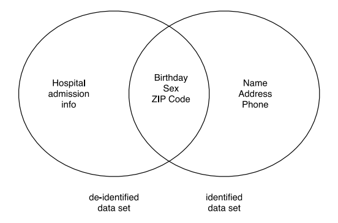

NIST IR 8053 日本語訳
英語タイトル : De-Identification of Personal Information日本語タイトル : 個人情報の非識別化
公開日 : 2015-10-22
原文URL : https://csrc.nist.gov/pubs/ir/8053/final
翻訳編集 : 自動生成（有志による非公式の日本語訳）, 原文取得日 : 2026-10-31, 訳文 : 590 / 591 ブロック
[要約] NIST IR 8053 は、データセットから識別情報を取り除き、個々のデータを特定の個人と結びつけられないようにする非識別化に関する報告書です。非識別化は、個人情報の収集、処理、保管、配布、公開に伴うプライバシーリスクを減らしうるもので、個人情報の利用・共有とプライバシー保護という相反する目標の均衡を図るものとされています。近年の研究で、非識別化されたデータが再識別される場合があることが示されています。本書は、約 20 年にわたる非識別化の研究を要約し、現在の実務を論じ、今後の研究の機会を示します。構造化データの非識別化と再識別の手法、非構造化データの課題などを扱います。
NISTIR 8053
NISTIR 8053
De-Identification of Personal Information
個人情報の非識別化
Simson L. Garfinkel
Simson L. Garfinkel
This publication is available free of charge from: http://dx.doi.org/10.6028/NIST.IR.8053
この刊行物は次の場所から無料で入手できます: http://dx.doi.org/10.6028/NIST.IR.8053
［NIST のロゴ。公的な標章のため、この非公式サイトには掲載していません。原本 PDF を参照してください。］
NISTIR 8053
NISTIR 8053
De-Identification of Personal Information
個人情報の非識別化
Simson L. Garfinkel
Information Access Division
Information Technology Laboratory
Simson L. Garfinkel
情報アクセス部門
情報技術研究所
This publication is available free of charge from: http://dx.doi.org/10.6028/NIST.IR.8053
この刊行物は次の場所から無料で入手できます: http://dx.doi.org/10.6028/NIST.IR.8053
October 2015
2015 年 10 月
U.S. Department of Commerce
Penny Pritzker, Secretary
米国商務省
Penny Pritzker 長官
National Institute of Standards and Technology
Willie May, Under Secretary of Commerce for Standards and Technology and Director
米国国立標準技術研究所
Willie May、NIST 所長兼商務次官（標準・技術担当）
National Institute of Standards and Technology Internal Report 8053
vi + 46 pages (October 2015)
米国国立標準技術研究所 内部報告書 8053
vi + 46 ページ（2015 年 10 月）
This publication is available free of charge from: http://dx.doi.org/10.6028/NIST.IR.8053
この刊行物は次の場所から無料で入手できます: http://dx.doi.org/10.6028/NIST.IR.8053
Certain commercial entities, equipment, or materials may be identified in this document in order to describe an experimental procedure or concept adequately. Such identification is not intended to imply recommendation or endorsement by NIST, nor is it intended to imply that the entities, materials, or equipment are necessarily the best available for the purpose.
本書では、実験の手順や概念を適切に説明するために、特定の商業団体、機器、材料に言及している場合があります。そのような言及は、NIST による推奨や推薦を意味するものではなく、それらの団体、材料、機器がその目的に利用可能なもののうち必ずしも最良であることを意味するものでもありません。
There may be references in this publication to other publications currently under development by NIST in accordance with its assigned statutory responsibilities. The information in this publication, including concepts and methodologies, may be used by Federal agencies even before the completion of such companion publications. Thus, until each publication is completed, current requirements, guidelines, and procedures, where they exist, remain operative. For planning and transition purposes, Federal agencies may wish to closely follow the development of these new publications by NIST.
本書には、NIST が法令で定められた責務に従って現在策定中の他の刊行物への言及が含まれる場合があります。それらの関連刊行物の完成前であっても、本書の情報（概念および方法論を含む）を連邦機関が使用してもよいです。したがって、各刊行物が完成するまでは、現行の要件、ガイドライン、手順が存在する場合は、それらが引き続き有効です。計画および移行のため、連邦機関は、NIST によるこれらの新しい刊行物の策定状況を注意深く追うことを検討してもよいです。
Organizations are encouraged to review all draft publications during public comment periods and provide feedback to NIST. All NIST Computer Security Division publications, other than the ones noted above, are available at http://csrc.nist.gov/publications.
組織は、パブリックコメント期間中にすべてのドラフト刊行物を確認し、NIST にフィードバックを提供するよう奨励されています。上記以外の NIST コンピュータセキュリティ部門のすべての刊行物は、http://csrc.nist.gov/publications で入手できます。
National Institute of Standards and Technology
Attn: Computer Security Division, Information Technology Laboratory
100 Bureau Drive (Mail Stop 8930) Gaithersburg, MD 20899-8930
米国国立標準技術研究所
宛先: Computer Security Division, Information Technology Laboratory
100 Bureau Drive (Mail Stop 8930) Gaithersburg, MD 20899-8930
Reports on Computer Systems Technology
コンピュータシステム技術に関する報告書
The Information Technology Laboratory (ITL) at the National Institute of Standards and Technology (NIST) promotes the U.S. economy and public welfare by providing technical leadership for the Nation’s measurement and standards infrastructure. ITL develops tests, test methods, reference data, proof of concept implementations, and technical analyses to advance the development and productive use of information technology. ITL’s responsibilities include the development of management, administrative, technical, and physical standards and guidelines for the cost-effective security and privacy of other than national security-related information in Federal information systems.
米国国立標準技術研究所（NIST）の情報技術研究所（ITL）は、国の計測・標準インフラストラクチャに対する技術的なリーダーシップを提供することにより、米国の経済と公共の福祉を促進しています。ITL は、情報技術の開発と生産的な利用を進めるために、テスト、テスト方法、参照データ、概念実証の実装、技術分析を開発しています。ITL の責務には、連邦情報システムにおける、国家安全保障に関するもの以外の情報について、費用対効果の高いセキュリティおよびプライバシーのための管理上、行政上、技術上、物理上の標準およびガイドラインの策定が含まれます。
Abstract
概要
De-identification removes identifying information from a dataset so that individual data cannot be linked with specific individuals. De-identification can reduce the privacy risk associated with collecting, processing, archiving, distributing or publishing information. De-identification thus attempts to balance the contradictory goals of using and sharing personal information while protecting privacy. Several U.S laws, regulations and policies specify that data should be de-identified prior to sharing. In recent years researchers have shown that some de-identified data can sometimes be re-identified. Many different kinds of information can be de-identified, including structured information, free format text, multimedia, and medical imagery. This document summarizes roughly two decades of de-identification research, discusses current practices, and presents opportunities for future research.
非識別化は、データセットから識別情報を取り除き、個々のデータを特定の個人に結び付けられないようにします。非識別化は、情報の収集、処理、アーカイブ、配布、公開に伴うプライバシーリスクを低減できます。このように非識別化は、個人情報を利用・共有することと、プライバシーを保護することという、相反する目標の均衡を図ろうとするものです。米国の複数の法律、規則、政策は、共有の前にデータを非識別化すべきであると定めています。近年、研究者は、非識別化されたデータの一部が再識別され得ることを示してきました。非識別化できる情報には、構造化情報、自由形式のテキスト、マルチメディア、医用画像など、さまざまな種類があります。本書は、約 20 年にわたる非識別化の研究を要約し、現在の実務を論じ、今後の研究の機会を示します。
Keywords
キーワード
De-identification; HIPAA Privacy Rule; k-anonymity; differential privacy; re-identification; privacy
非識別化、HIPAA プライバシー規則、k-匿名性、差分プライバシー、再識別、プライバシー
Acknowledgements
謝辞
John Garofolo and Barbara Guttman provided significant guidance and support in completing this project. The author would also like to thank Daniel Barth-Jones, David Clunie, Pam Dixon, Khaled El Emam, Orit Levin, Bradley Malin, Latanya Sweeney, and Christine M. Task for their assistance in answering questions and reviewing earlier versions of this document. More than 30 sets of written comments were received on Draft 1 of this document from many organizations including Anonos, Center for Democracy and Technology, Future of Privacy Forum, GlaxoSmithKline, IMS Health, Microsoft, Optum Privacy, Patient Privacy Rights, Privacy Analytics, and World Privacy Forum. We also received comments from the members of COST Action IC1206 “De-identification for Privacy Protection in Multimedia Content,” Dr. Marija Krlic, Prof. Samir Omarovic, Prof. Slobodan Ribarić and Prof. Alexin Zoltan.
John Garofolo と Barbara Guttman は、本プロジェクトの完成にあたり、多大な指導と支援を提供しました。著者はまた、Daniel Barth-Jones、David Clunie、Pam Dixon、Khaled El Emam、Orit Levin、Bradley Malin、Latanya Sweeney、Christine M. Task が、質問への回答と本書の以前の版のレビューで協力してくれたことに感謝します。本書のドラフト 1 に対して、Anonos、Center for Democracy and Technology、Future of Privacy Forum、GlaxoSmithKline、IMS Health、Microsoft、Optum Privacy、Patient Privacy Rights、Privacy Analytics、World Privacy Forum など多くの組織から、30 件を超える書面コメントが寄せられました。COST Action IC1206「De-identification for Privacy Protection in Multimedia Content」のメンバー、Dr. Marija Krlic、Prof. Samir Omarovic、Prof. Slobodan Ribarić、Prof. Alexin Zoltan からもコメントをいただきました。
Audience
想定読者
This document is intended for use by officials, advocacy groups, researchers and other members of communities that are concerned with policy issues involving the creation, use and sharing of data containing personal information. It is also designed to provide technologists and researchers with an overview of the technical issues in the de-identification of data. Data protection officers in government, industry and academia will also benefit from the assemblage of information in this document.
本書は、個人情報を含むデータの作成、利用、共有に関わる政策上の課題に関心を持つ、行政官、権利擁護団体、研究者、その他のコミュニティの構成員が利用することを想定しています。また、技術者や研究者に、データの非識別化における技術的な課題の概要を提供することも意図しています。政府、産業界、学術界のデータ保護責任者にも、本書に集約された情報が役立ちます。
While this document assumes a high-level understanding of information system security technologies, it is intended to be accessible to a wide audience. For this reason, this document minimizes the use of mathematical notation.
本書は情報システムセキュリティ技術についての高度な理解を前提としていますが、幅広い読者が理解できるようにすることを意図しています。このため、本書では数学的な表記の使用を最小限にしています。
Table of Contents
目次
List of Appendices
付録一覧
1 Introduction
1 はじめに
De-identification is a tool that organizations can use to remove personal information from data that they collect, use, archive, and share with other organizations.
非識別化は、組織が収集、利用、アーカイブし、他の組織と共有するデータから、個人情報を取り除くために使えるツールです。
De-identification is not a single technique, but a collection of approaches, algorithms, and tools that can be applied to different kinds of data with differing levels of effectiveness. In general, privacy protection improves as more aggressive de-identification techniques are employed, but less utility remains in the resulting dataset.
非識別化は単一の技術ではなく、さまざまな種類のデータに適用でき、有効性の度合いが異なる、手法、アルゴリズム、ツールの集まりです。一般に、より強力な非識別化技術を用いるほどプライバシー保護は向上しますが、結果として得られるデータセットに残る有用性は低下します。
De-identification is especially important for government agencies, businesses, and other organizations that seek to make data available to outsiders. For example, significant medical research resulting in societal benefit is made possible by the sharing of de-identified patient information under the framework established by the Health Insurance Portability and Accountability Act (HIPAA) Privacy Rule, the primary US regulation providing for privacy of medical records.
非識別化は、データを外部の者に利用可能にしようとする政府機関、企業、その他の組織にとって、特に重要です。たとえば、社会的な利益をもたらす重要な医学研究は、米国で医療記録のプライバシーを定める主要な規則である医療保険の相互運用性と責任に関する法律（HIPAA）プライバシー規則が定める枠組みのもとで、非識別化された患者情報が共有されることで可能になっています。
As long as any utility remains in the data derived from personal information, there also exists the possibility, however remote, that some information might be linked back to the original individuals on whom the data are based. When de-identified data can be re-identified the privacy protection provided by de-identification is lost. The decision of how or if to de-identify data should thus be made in conjunction with decisions of how the de-identified data will be used, shared or released, since the risk of re-identification can be difficult to estimate.
個人情報から得られたデータに有用性が残っている限り、どれほど可能性が低くても、一部の情報が元になった個人に結び付けられるおそれが存在します。非識別化されたデータが再識別され得る場合、非識別化によるプライバシー保護は失われます。再識別のリスクは推定が困難な場合があるため、データをどのように非識別化するか、あるいは非識別化するかどうかは、非識別化されたデータをどのように利用、共有、公開するかの決定と合わせて判断すべきです。
Risks to individuals can remain in de-identified data. These risks include allowing inferences about individuals in the data without re-identification, and impacts on groups represented in the data.
非識別化されたデータにも、個人に対するリスクが残る場合があります。これらのリスクには、再識別を行わなくてもデータ中の個人について推論できてしまうこと、およびデータに表れる集団への影響が含まれます。
1.1 Document Purpose and Scope
1.1 本書の目的と範囲
This document provides an overview of de-identification issues and terminology. It summarizes significant publications to date involving de-identification and re-identification. It does not make recommendations regarding the appropriateness of de-identification or specific de-identification algorithms.
本書は、非識別化の課題と用語の概要を示します。非識別化と再識別に関するこれまでの重要な刊行物を要約します。非識別化が適切かどうか、あるいは特定の非識別化アルゴリズムについて、推奨は行いません。
1.2 Intended Audience
1.2 想定読者
This document is intended for use by officials, advocacy groups, researchers, academics, and other members of communities that are concerned with the practical and policy issues involving the creation, use, archiving, and sharing of data containing personal information. It is also designed to provide researchers and academics with a limited overview of the technical issues involving the de-identification of data. Although this document presents research from around the world and is written for a world-wide audience, it is primarily concerned with policy and legal issues in the United States. While this document assumes a high-level understanding of information system security technologies, it is intended to be accessible to a wide audience. For this reason, this document minimizes the use of mathematical notation.
本書は、個人情報を含むデータの作成、利用、アーカイブ、共有に関わる実務上および政策上の課題に関心を持つ、行政官、権利擁護団体、研究者、学者、その他のコミュニティの構成員が利用することを想定しています。また、研究者や学者に、データの非識別化に関わる技術的な課題の限定的な概要を提供することも意図しています。本書は世界各地の研究を紹介し、世界中の読者に向けて書かれていますが、主な関心は米国における政策上および法的な課題にあります。本書は情報システムセキュリティ技術についての高度な理解を前提としていますが、幅広い読者が理解できるようにすることを意図しています。このため、本書では数学的な表記の使用を最小限にしています。
1.3 Organization
1.3 構成
The remainder of this report is organized as follows: Section 2 introduces the concepts of de-identification, re-identification and data sharing models. Section 3 discusses approaches for de-identifying structured data, typically by removing, masking or altering specific categories such as names and phone numbers. Section 4 discusses challenges of de-identification for non-tabular data, such as free-format text, images, and genomic information. Section 5 provides this report’s conclusion that de-identification, while not perfect, is a significant technical control that may protect the privacy of data subjects. Appendix A is a glossary, and Appendix B provides a list of additional resources.
本報告書の残りは次のように構成されています。第 2 節では、非識別化、再識別、データ共有モデルの概念を紹介します。第 3 節では、通常は氏名や電話番号などの特定のカテゴリを削除、マスキング、または変更することによる、構造化データの非識別化の手法を論じます。第 4 節では、自由形式のテキスト、画像、ゲノム情報などの非表形式データの非識別化における課題を論じます。第 5 節では、非識別化は完全ではないものの、データ主体のプライバシーを保護し得る重要な技術的管理策であるという、本報告書の結論を示します。付録 A は用語集であり、付録 B は追加の参考資料の一覧を示します。
1.4 Notes on Terminology
1.4 用語に関する注記
1.4.1 “de-identification,” “redaction,” “pseudonymization,” and “anonymization”
1.4.1 「非識別化（de-identification）」「墨消し（redaction）」「仮名化（pseudonymization）」「匿名化（anonymization）」
Some authors and publications use the terms “de-identification” and “anonymization” interchangeably. Others use “de-identification” to describe a process and “anonymization” to denote a specific kind of de-identification that cannot be reversed. In some healthcare contexts the terms “de-identification” and “pseudonymization” are treated equivalently, with the term “anonymization” being used to indicate that the mapping pseudonyms to subject identities has been erased. The term “redaction” is sometimes used in a government context to describe the straightforward removal of information that is identifying or otherwise sensitive.
「非識別化（de-identification）」と「匿名化（anonymization）」という用語を同じ意味で用いる著者や刊行物があります。一方で、「非識別化」を処理を表す語として用い、「匿名化」を元に戻せない特定の種類の非識別化を表す語として用いるものもあります。医療分野の一部の文脈では、「非識別化」と「仮名化」は同等に扱われ、「匿名化」は、仮名を対象者の身元に対応付けるマッピングが消去されたことを示すために使われます。「墨消し（redaction）」という用語は、政府の文脈で、識別情報やその他の機微な情報を単純に削除することを表すために使われることがあります。
This document bases its terminology choices on ISO/TS 25237:2008(E), “Health Informatics— Pseudonymization.” Unfortunately, the standard does not provide unambiguous guidance. In particular, the standard contains the following definitions::
本書の用語選択は、ISO/TS 25237:2008(E)「Health Informatics— Pseudonymization」に基づいています。残念ながら、この規格は曖昧さのない指針を示していません。特に、この規格には次の定義が含まれています:
de-identification: “general term for any process of removing the association between a set of identifying data and the data subject.” [p. 3]
de-identification（非識別化）: 「識別データの集合とデータ主体との関連付けを取り除く、あらゆる処理の総称。」[p. 3]
anonymization: “process that removes the association between the identifying dataset and the data subject.” [p. 2]
anonymization（匿名化）: 「識別データセットとデータ主体との関連付けを取り除く処理。」[p. 2]
pseudonymization: “particular type of anonymization that both removes the association with a data subject and adds an association between a particular set of characteristics relating to the data subject and one or more pseudonyms.”1 [p. 5]
pseudonymization（仮名化）: 「データ主体との関連付けを取り除くと同時に、データ主体に関する特定の特性の集合と 1 つ以上の仮名との関連付けを加える、特定の種類の匿名化。」1 [p. 5]
Later, ISO/TS 25237:2008(E) provides explanatory text stating:
その後、ISO/TS 25237:2008(E) は次のような説明文を示しています:
“NOTE—Anonymization is another subcategory of de-identification. Unlike pseudonymization, it does not provide a means by which the information may be linked to the same person across multiple data records or information systems. Hence re-identification of anonymized data is not possible.” [p. 6]
「注記—匿名化は、非識別化のもう 1 つの下位区分です。仮名化と異なり、複数のデータ記録または情報システムにまたがって、情報を同一人物に結び付ける手段を提供しません。したがって、匿名化されたデータの再識別は不可能です。」[p. 6]
The problem with these definitions is that some anonymization attempts have resulted in data have been re-identified, implying that the date thought to be anonymized actually weren’t.
これらの定義の問題点は、匿名化を試みたデータの一部が再識別されており、匿名化されたと考えられていたデータが実際には匿名化されていなかったことを示している点です。
In medical imaging, the term “de-identification” is used to denote “the process of removing real patient identifiers or the removal of all subject demographics from imaging data for anonymization,” while the term “de-personalization” is taken to mean “the process of completely removing any subject-related information from an image, including clinical trial identifiers.”2
医用画像の分野では、「de-identification（非識別化）」という用語は「匿名化のために、実際の患者識別子を取り除く、または画像データからすべての被験者の人口統計情報を取り除く処理」を表すのに使われ、「de-personalization（脱個人化）」という用語は「臨床試験の識別子を含め、被験者に関するあらゆる情報を画像から完全に取り除く処理」を意味するものとされています。2
Because of the inconsistencies in the use and definitions of the word “anonymization,” this document avoids the term except in this section and in the titles of some references. Instead, it uses the term “de-identification,” with the understanding that sometimes de-identified information can be re-identified, and sometimes it cannot.
「匿名化（anonymization）」という語の使われ方と定義に一貫性がないため、本書では、この節および一部の参考文献の題名を除き、この語を避けます。代わりに「非識別化（de-identification）」という用語を使い、非識別化された情報が再識別され得る場合もあれば、そうでない場合もあることを前提とします。
1.4.2 “Personally Identifiable Information (PII)” and “Personal Information”
1.4.2 「個人を特定できる情報（PII）」と「個人情報」
The phrase Personally Identifiable Information (PII) is typically used to indicate information that contains identifiers specific to individuals, although there are a variety of definitions for PII in various law, regulation, and agency guidance documents. Because of these multiple different definitions, it is possible to have information that singles out individuals but which does not meet a particular definition of PII. An added complication is that some documents use the phrase PII to denote any information that is attributable to individuals, or information that is uniquely attributable to a specific individual, while others use the term strictly for data that are in fact identifying
個人を特定できる情報（PII）という語句は、通常、個人に固有の識別子を含む情報を示すために使われますが、さまざまな法律、規則、機関のガイダンス文書に、PII の多様な定義があります。このように定義が複数あるため、個人を特定してしまうものの、特定の PII の定義には該当しない情報が存在し得ます。さらに複雑なのは、PII という語句を、個人に帰属させられるあらゆる情報、または特定の個人に一意に帰属させられる情報を表すために使う文書がある一方で、実際に識別性を持つデータに限ってこの語句を使う文書もある
Because of these inconsistences, this document avoids the term “personally identifiable information.” Instead, the phrase “personal information” is used to denote information from individuals, and “identifying information” is used to denote information that identifies individuals. Therefore, identifying information is personal information, but personal information is not necessarily identifying information.
このような不整合があるため、本書は「個人を特定できる情報」という語を避けます。代わりに、「個人情報」という語句を個人から得られる情報を表すために使い、「識別情報」という語句を個人を識別する情報を表すために使います。したがって、識別情報は個人情報ですが、個人情報は必ずしも識別情報ではありません。
2 De-identification, Re-Identification, and Data Sharing Models
2 非識別化、再識別、データ共有モデル
This section explains the motivation for de-identification, discusses the use of re-identification attacks to gauge the effectiveness of de-identification, and describes models for sharing de-identified data. It also introduces the terminology used in this report.
この節では、非識別化の動機を説明し、非識別化の有効性を測るための再識別攻撃の利用を論じ、非識別化されたデータを共有するためのモデルを説明します。また、本報告書で使用する用語も紹介します。
2.1 Motivation
2.1 動機
Increasingly, organizations that are collecting and maintaining data are being challenged to protect the data while using and sharing them as widely as possible. For government data, sharing can increase transparency, provide new resources to private industry, and lead to more efficient government as a whole. Private firms can realize benefits from dataset sharing in the form of increased publicity, civic engagement, and even increased revenue from the sale of data or analytic results.
データを収集し維持している組織には、データをできるだけ広く利用・共有しながら保護することが、ますます求められています。政府のデータについては、共有によって透明性が高まり、民間産業に新たな資源が提供され、政府全体の効率化につながり得ます。民間企業は、データセットの共有から、知名度の向上、市民参加の拡大、さらにはデータや分析結果の販売による収益の増加といった利益を得ることができます。
When data contain identifying information such as names, email addresses, geolocation information, or photographs, there can be a conflict between the goals of data use and privacy protection. De-identification attempts to resolve this conflict, allowing for some privacy sensitive data that identifies individuals to be removed, while allowing other useful information to remain.
データに、氏名、電子メールアドレス、位置情報、写真などの識別情報が含まれる場合、データ利用の目的とプライバシー保護の目的が衝突することがあります。非識別化はこの衝突を解決しようとするものであり、個人を識別するプライバシーに関わる機微なデータの一部を取り除きつつ、その他の有用な情報を残すことを可能にします。
De-identification is thus an important tool that organizations can use to minimize the privacy risk associated with creating, using, archiving, sharing and even publishing data containing personal information. De-identifying data at the time of collection or after minimal processing can reduce the costs associated with using and archiving data, by reducing the privacy risk associated with inadvertent release (i.e., a data breach). De-identifying data that are shared can reduce the need for technical and policy controls. De-identification can therefore allow organizations to make greater use of data than might otherwise be possible.
このように非識別化は、個人情報を含むデータの作成、利用、アーカイブ、共有、さらには公開に伴うプライバシーリスクを最小化するために、組織が利用できる重要なツールです。データを収集の時点、または最小限の処理の後に非識別化すると、意図しない公開（すなわち、データ侵害）に伴うプライバシーリスクが減るため、データの利用とアーカイブに伴うコストを削減できます。共有するデータを非識別化すると、技術的管理策と政策上の管理策の必要性を減らせます。したがって非識別化により、組織は、非識別化をしなければ可能な範囲を超えてデータを活用できるようになります。
Several U.S. laws and regulations specifically recognize the importance and utility of data de-identification. Examples include, but are not limited to:
米国の複数の法律と規則が、データの非識別化の重要性と有用性を明確に認めています。例としては、次のものがありますが、これらに限りません:
•The Department of Education has held that the restrictions imposed by the Family and Educational Records Privacy Act (FERPA) do not apply to de-identified student records. “Educational agencies and institutions are permitted to release, without consent, educational records, or information from educational records that have been de-identified through the removal of all personally identifiable information.”3
•教育省は、家族教育の権利およびプライバシー法（FERPA）による制限は、非識別化された学生の記録には適用されないとの見解を示しています。「教育機関は、個人を特定できるすべての情報を削除して非識別化した教育記録、または教育記録の情報を、同意なしに公開することが許されています。」3
•The requirements for the security and privacy of health information established by the Health Insurance Portability and Accountability Act (HIPAA) Privacy Rule4 and the Health Information Technology for Economic and Clinical Health Act (HITECH Act) 5 explicitly do not apply to the protected health information that has been de-identified, provided that there is “no reasonable basis to believe that the information can be used to identify an individual.”6
•医療保険の相互運用性と責任に関する法律（HIPAA）プライバシー規則4と、経済的および臨床的健全性のための医療情報技術に関する法律（HITECH 法）5が定める医療情報のセキュリティとプライバシーの要件は、「その情報が個人の識別に使用され得ると信じるに足る合理的な根拠がない」場合に限り、非識別化された保護対象保健情報には明示的に適用されません。6
•The Foodborne Illness Surveillance System operated by the Centers for Disease Control and Prevention7 is required to allow “timely public access to aggregated, de-identified surveillance data.”8
•疾病予防管理センターが運用する食中毒サーベイランスシステム7は、「集計され、非識別化されたサーベイランスデータへの、タイムリーな公的アクセス」を可能にすることが求められています。8
•Entities contracted by Health and Human Services to provide drug safety data must have the ability to provide that data in de-identified form.9
•医薬品の安全性データを提供するために保健福祉省と契約した事業体は、そのデータを非識別化した形で提供できる能力を持たなければなりません。9
•Voluntary safety reports submitted to the Federal Aviation Submission are not protected from public disclosure if the data that they contain are de-identified.10
•連邦航空局に提出された自主的な安全報告書は、報告書に含まれるデータが非識別化されている場合、公開から保護されません。10
These laws and regulations treat de-identification as a technical control that can be applied to data, removing personal information and allowing the data that remains to be used in a way that will not disclose the identities of the data subjects.
これらの法律と規則は、非識別化を、データに適用できる技術的管理策と位置づけています。すなわち、個人情報を取り除き、残ったデータを、データ主体の身元を明らかにしない形で利用できるようにするものです。
However, de-identification approaches based on suppressing or generalizing specific fields in a database cannot provide absolute privacy guarantees, because there is always a chance that the remaining data can be re-identified using an auxiliary dataset. Section 3.6 discuss some of the well-publicized cases in which data that were thought to be properly de-identified were published and then later re-identified by researchers or journalists. Some of these re-identification demonstrations disclosed the identity of the data subjects. Additional privacy issues can result from the disclosure of specific attributes that the dataset linked to the identities. Nevertheless, a test of the HIPAA “Safe Harbor” method, one of two approaches that can be used to meet the HIPAA de-identification standard (which is based on field suppression) found that less than 1% of the de-identified records could be re-identified when the only identifying information that remained was year of birth, sex, and 3-digit ZIP code (see Section 3.5).
しかし、データベースの特定のフィールドを抑制または一般化することに基づく非識別化の手法では、絶対的なプライバシーを保証できない場合があります。残ったデータが補助的なデータセットを使って再識別される可能性が常にあるためです。第3.6節では、適切に非識別化されたと考えられていたデータが公開され、その後に研究者やジャーナリストによって再識別された、広く知られた事例のいくつかを論じます。これらの再識別の実証のなかには、データ主体の身元を明らかにしたものもありました。さらに、データセットが身元に結び付けていた特定の属性が開示されることで、プライバシー上の問題が生じる場合もあります。それでも、HIPAAの非識別化基準を満たすために使える2つの手法のうちの1つである、HIPAAの「セーフハーバー」方式（フィールドの抑制に基づく）を試験したところ、残っている識別情報が生年、性別、3桁の郵便番号のみである場合、非識別化された記録のうち再識別できたのは1%未満でした（第3.5節を参照）。
Because of the re-identification risk, some organizations sharing de-identified data may wish to execute a data use agreement (DUA) with downstream users. For example, a DUA could prohibit a recipient of de-identified data from attempting to re-identify the data subjects, from linking to external data, or from sharing the data without permission.11
再識別のリスクがあるため、非識別化されたデータを共有する組織の中には、下流の利用者とデータ使用契約（DUA）を結ぶことを望む場合があります。たとえば DUA によって、非識別化されたデータの受領者が、データ主体の再識別を試みること、外部のデータと結び付けること、許可なくデータを共有することを禁止できます。11
As shown in Figure 1, all data exist on an identifiability spectrum. At one end (the left) are data that are not related to individuals (for example, historical weather records) and therefore pose no privacy risk. At the other end (the right) are data that are linked directly to specific individuals. Between these two endpoints are data that can be linked with effort, that can only be linked to groups of people, and that are based on individuals but cannot be linked back. In general, de-identification approaches are designed to push data to the left while retaining some desired utility, lowering the risk of distributing de-identified data to a broader population or the general public.
図 1 に示すように、すべてのデータは識別可能性のスペクトル上に存在します。一方の端（左）には、個人に関連しないデータ（たとえば、過去の気象記録）があり、したがってプライバシーリスクをもたらしません。もう一方の端（右）には、特定の個人に直接結び付けられたデータがあります。これら 2 つの端の間には、労力をかければ結び付けられるデータ、人々の集団にしか結び付けられないデータ、個人に基づいているものの結び付け直すことができないデータがあります。一般に、非識別化の手法は、望ましい有用性をある程度保ちながらデータを左に寄せるように設計されており、非識別化されたデータをより広い集団や一般に配布する際のリスクを下げます。
Some privacy advocates maintain that the Fair Information Practice Principles (FIPPs)12 require data subjects be notified that their personal data will be shared, even if the data being shared will be de-identified, and even if there is no legal obligation to notify the subjects. However, current US policy and law gives organizations considerable lattitude in the uses that can be made of de-identified data. These policies were typically developed based on an attempt to balance the societal benefit resulting from the use of de-identified data with the perceived risks to subjects that might result from having the data re-identified. Because these risks may change as technology evolves, it is important to periodically review policies regarding the use of de-identified data.
プライバシー擁護者の中には、公正情報実践原則（FIPPs）12は、共有されるデータが非識別化されている場合や、データ主体に通知する法的義務がない場合であっても、個人データが共有されることをデータ主体に通知するよう求めている、と主張する人がいます。しかし、現在の米国の政策と法律は、非識別化されたデータの利用方法について、組織に相当の裁量を与えています。これらの政策は通常、非識別化されたデータの利用がもたらす社会的な利益と、データが再識別されることでデータ主体に生じ得ると認識されているリスクとの均衡を図ろうとして策定されたものです。これらのリスクは技術の進化に伴って変わり得るため、非識別化されたデータの利用に関する政策を定期的に見直すことが重要です。
![Diagram of the data identifiability spectrum. An arrow labeled "Increasing privacy risk" rises from left to right above five database cylinders. Labels under the cylinders, left to right: "Data not related to individuals"; "Data that cannot be linked to any individual"; "Data that can be ambiguously linked several individuals" (also "k-anonymous information"); "Data that can be unambiguously linked to a specific individual" (also "potentially identifying information"); "Data that are linked to a specific individual" (also "identifying information"). At the bottom, an arrow pointing left to a vertical bar is labeled "De-identification moves data to the left".](assets/ir-8053/p0014-table-01.png)
データの識別可能性の範囲を示す図です。5 つのデータベースの円筒の上に、左から右へ上がる「Increasing privacy risk」（プライバシーリスクの増大）というラベルの矢印があります。円筒の下のラベルは左から順に、「Data not related to individuals」（個人に関係しないデータ）、「Data that cannot be linked to any individual」（どの個人にも結び付けられないデータ）、「Data that can be ambiguously linked several individuals」（複数の個人にあいまいに結び付けられるデータ。これも「k-anonymous information」）、「Data that can be unambiguously linked to a specific individual」（特定の個人に明確に結び付けられるデータ。これも「potentially identifying information」）、「Data that are linked to a specific individual」（特定の個人に結び付けられたデータ。これも「identifying information」）です。下部には、「De-identification moves data to the left」（非識別化はデータを左へ移す）というラベルの、左の縦棒を指す矢印があります。
Figure 1: The Data Identifiability Spectrum.
図 1: データ識別可能性のスペクトル。
2.2 Models for Privacy-Preserving use of Private Information
2.2 非公開情報をプライバシーを保護して利用するためのモデル
Academics have identified two distinct models for using personal information in a database while protecting the privacy of the data subjects:
研究者は、データ主体のプライバシーを保護しながらデータベース内の個人情報を利用するための、2 つの異なるモデルを特定しています:
•Privacy Preserving Data Mining (PPDM). In this model, data are not released, but are used instead for statistical processing or machine learning.13 The results of the calculations may be released in the form of statistical tables based on summarization and aggregation, classifiers that implement machine learning algorithms, and other kinds of results.
•プライバシー保護データマイニング（PPDM）。 このモデルでは、データは公開されず、代わりに統計処理や機械学習に使われます。13 計算の結果は、要約と集計に基づく統計表、機械学習アルゴリズムを実装した分類器、その他の種類の結果の形で公開される場合があります。
•Privacy Preserving Data Publishing (PPDP). In this model, data are processed to produce a new, de-identified or synthetic data product that is distributed to users.
•プライバシー保護データ公開（PPDP）。 このモデルでは、データを処理して、非識別化された、または合成された新しいデータ製品を作成し、利用者に配布します。
Both of these models are said to be “privacy preserving” in that they are intended to allow the release of some information (e.g., aggregated information, statistical results, classifiers, or synthetic data) without revealing information that can be attributed to a specific individual within the original dataset.
これら 2 つのモデルはどちらも、元のデータセット内の特定の個人に帰属させられる情報を明らかにすることなく、一部の情報（たとえば、集計情報、統計結果、分類器、合成データ）の公開を可能にすることを意図しているという意味で、「プライバシー保護」であるといわれます。
2.2.1 Privacy Preserving Data Mining (PPDM)
2.2.1 プライバシー保護データマイニング（PPDM）
PPDM is a broad term for any use of sensitive information to publish public statistics. Statistical reports that summarize confidential survey data are an example of PPDM.
PPDM は、機微な情報を使って公的な統計を公表するあらゆる利用を指す広い用語です。機密性のある調査データを要約した統計報告書は、PPDM の一例です。
Statistical Disclosure Limitation “is the discipline concerned with the modification of statistical data in order to prevent third parties working with these data to recognize individuals in the data.”14 Techniques developed for disclosure limitation include generalization of reported information to broader categories, swapping data between similar entities, and the addition of noise in reports.15
統計的開示抑制（Statistical Disclosure Limitation）とは、「統計データを扱う第三者が、データ内の個人を識別できないように統計データを修正することを扱う学問分野」です。14 開示抑制のために開発された技術には、報告される情報をより広いカテゴリへ一般化すること、類似した主体の間でデータを入れ替えること、報告にノイズを加えることがあります。15
Differential Privacy is a set of techniques based on a mathematical definition of identity disclosure and information leakage from operations on a dataset. Differential privacy prevents disclosure by adding non-deterministic noise (usually small random values) to the results of mathematical operations before the results are reported.16 Differential privacy’s mathematical definition holds that the result of an analysis of a dataset should be roughly the same before and after the addition or removal of a single data record (which is usually taken to be the data from a single individual). This works because the amount of noise added masks the contribution of any individual. The degree of sameness is defined by the parameter 𝛆 (epsilon). The smaller the parameter 𝛆, the more noise is added, and the more difficult it is to distinguish the contribution of a single record. The result is increased privacy for all of the data subjects. In its most basic form, differential privacy applies only to online query systems, but differential privacy can also be used to produce machine-learning statistical classifiers and synthetic data.17
差分プライバシーは、データセットに対する演算による身元の開示と情報の漏えいの数学的な定義に基づく、一連の技術です。差分プライバシーは、数学的演算の結果を報告する前に、その結果に非決定的なノイズ（通常は小さな乱数値）を加えることで、開示を防ぎます。16 差分プライバシーの数学的な定義では、データセットの分析結果は、単一のデータ記録（通常は 1 人の個人のデータとされます）を追加または削除する前と後でおおよそ同じであるべきとされます。これが成り立つのは、加えられるノイズの量が個人の寄与を覆い隠すためです。同じであることの度合いは、パラメータ 𝛆（イプシロン）で定義されます。パラメータ 𝛆 が小さいほど、より多くのノイズが加えられ、単一の記録の寄与を区別することが困難になります。その結果、すべてのデータ主体のプライバシーが高まります。最も基本的な形では、差分プライバシーはオンラインのクエリシステムにのみ適用されますが、差分プライバシーは、機械学習の統計的分類器や合成データの作成にも使えます。17
Differential privacy is an active research area, but to date it has only been applied to a few operational systems, including:
差分プライバシーは活発な研究分野ですが、これまでに適用された運用システムは、次のものを含め、ごくわずかです:
•The Census Bureau’s “OnTheMap” website, which uses differential privacy to create reasonably accurate block-level synthetic census data.18
•国勢調査局の「OnTheMap」ウェブサイト。差分プライバシーを使って、ブロックレベルの、合理的に正確な国勢調査の合成データを作成しています。18
•Google’s “Chrome” web browser, which uses randomized responses to collect aggregate statistics about the Windows process names running on the user’s computer and the user’s home page. Although the statistics are accurate in aggregate, the use of randomization makes it impossible to reliably determine a users’ processes or home page.19
•Google の「Chrome」ウェブブラウザ。ランダム化応答を使って、利用者のコンピュータで動作している Windows のプロセス名と、利用者のホームページに関する集計統計を収集しています。統計は集計としては正確ですが、ランダム化を用いているため、その利用者のプロセスやホームページを確実に判断することはできません。19
Differential privacy comes at the cost of decreased result accuracy. For example, a study conducted by Fredrikson et al. determined the impact of using differential privacy to create a statistical model for correlating genomic information and warfarin dosage based on clinical trial data.20 The study found that the models constructed using differential privacy would result in worse clinical outcomes for a significant number of patients compared to those models created without differential privacy, although this finding was only tested in simulation and not in an actual clinical trial.
差分プライバシーには、結果の正確さが低下するという代償があります。たとえば Fredrikson et al. が行った研究では、臨床試験データに基づいてゲノム情報とワルファリンの投与量を関連付ける統計モデルを作成する際に、差分プライバシーを使うことの影響を調べました。20 この研究では、差分プライバシーを用いて構築したモデルは、差分プライバシーなしで作成したモデルと比べて、相当数の患者の臨床上の転帰を悪化させる結果になることがわかりました。ただし、この所見はシミュレーションで検証されただけで、実際の臨床試験では検証されていません。
2.2.2 Privacy Preserving Data Publishing (PPDP)
2.2.2 プライバシー保護データ公開（PPDP）
PPDP allows for information based on private data to be published, allowing other researchers to perform novel analyses. The goal of PPDP is to provide data that have high utility without compromising the identity of the data subjects.21
PPDP は、非公開データに基づく情報の公開を可能にし、ほかの研究者が新たな分析を行えるようにします。PPDP のゴールは、データ主体の識別性を損なうことなく、有用性の高いデータを提供することです。21
De-identification is the “general term for any process of removing the association between a set of identifying data and the data subject.”22 De-identification is designed to protect individual identity, making it hard or impossible to learn if the data in a dataset is related to a specific individual, while preserving some of the dataset’s utility for other purposes. De-identification is one of the primary tools for achieving PPDP.
非識別化は、「識別データの集合とデータ主体との関連付けを取り除く、あらゆる処理の総称」です。22 非識別化は、個人の身元を保護するように設計されており、データセット内のデータが特定の個人に関連するかどうかを知ることを困難または不可能にしつつ、データセットの有用性の一部を他の目的のために保ちます。非識別化は、PPDP を実現するための主要なツールの 1 つです。
Synthetic data generation uses some PPDM techniques to create a dataset that is similar to the original data, but where some or all of the resulting data elements are generated and do not map to actual individuals. As such, synthetic data generation can be seen as a fusion of PPDM and PPDP.
合成データ生成は、一部の PPDM 技術を用いて、元のデータに類似しているものの、結果として得られるデータ要素の一部またはすべてが生成されたものであり、実在の個人に対応しないデータセットを作成します。このため、合成データ生成は、PPDM と PPDP の融合とみなせます。
2.3 De-Identification Data Flow Model
2.3 非識別化のデータフローモデル

データの流れを示す図です。「Alice」「Bob」「Cynthia」「Daniel」の 4 人のデータ主体（「Data Subjects」）から、「Collection」（収集）の矢印が「Dataset with personal data」（個人データを含むデータセット）の箱へ向かいます。そこから「De-identification」（非識別化）の矢印が「Dataset thought to have no personal data」（個人データを含まないと考えられるデータセット）の角丸の箱へ向かいます。そこから「Data use agreement」（データ使用契約）の矢印がハート形の「Trusted Data Recipients」（信頼できるデータ受領者）へ、「Published」（公開）の矢印が雲形の「Unvetted Data Recipients」（審査されていないデータ受領者）へ向かいます。
Figure 2: Data Collection, De-Identification and Use
図 2: データの収集、非識別化、利用
Figure 2 provides an overview of the de-identification process. Data are collected from Data Subjects, the “persons to whom data refer.” (ISO/TS 25237-2008) These personal data are combined into a dataset containing personal information. De-identification creates a new dataset thought to have no identifying data. This dataset may be internally used by an organization instead of the original dataset to decrease privacy risk. The dataset may also be provided to trusted data recipients who are bound by additional administrative controls such as data use agreements.23 Alternatively, the data might be made broadly available to a larger (potentially limitless) number of unknown and unvetted data recipients—for example, by publishing the de-identified data on the Internet.
図 2 は、非識別化の処理の概要を示しています。データはデータ主体、すなわち「データが指し示す人」（ISO/TS 25237-2008）から収集されます。これらのパーソナルデータは、個人情報を含むデータセットにまとめられます。非識別化により、識別データを含まないと考えられる新しいデータセットが作成されます。このデータセットは、プライバシーリスクを減らすために、元のデータセットの代わりに組織内で使われる場合があります。また、データ使用契約などの追加の管理策に拘束される、信頼できるデータ受領者に提供される場合もあります。23 あるいは、データは、より多数の（潜在的には無制限の）、未知で審査を受けていないデータ受領者に広く利用可能にされる場合もあります。たとえば、非識別化されたデータをインターネットで公開する場合です。
As Figure 2 shows, de-identified data need not be publicly released. Furthermore, de-identification may be merely one of several controls applied to protect the identity of the data subjects.
図 2 が示すように、非識別化されたデータを一般に公開する必要はありません。さらに、非識別化は、データ主体の身元を保護するために適用される複数の管理策のうちの 1 つにすぎない場合があります。
De-identification can be performed manually by a human, by an automated process, or by a combination of the two. Once de-identified, data can be manually reviewed or otherwise audited to determine if any identifying information remains, or to see if it is possible to learn the identities that have been removed by correlating with other data sources.
非識別化は、人間が手作業で行うことも、自動化された処理で行うことも、その両方を組み合わせて行うこともできます。非識別化した後は、データを手作業でレビューするか、それ以外の方法で監査して、識別情報が残っていないか、または他のデータソースと照合することで、取り除かれた人々の身元を特定できるかどうかを確かめることができます。
2.4 Re-identification Attacks and Data Intruders
2.4 再識別攻撃とデータ侵入者
Re-identification is the process of attempting to discern the identities that have been removed from de-identified data. Because an important goal of de-identification is to prevent unauthorized re-identification, such attempts are sometimes called re-identification attacks.
再識別とは、非識別化されたデータから取り除かれた人々の身元を特定しようとする処理です。非識別化の重要な目標の 1 つは、許可されていない再識別を防ぐことであるため、そのような試みは再識別攻撃と呼ばれることがあります。
The term “attack” is borrowed from the literature of computer security, in which the security of a computer system or encryption algorithm is analyzed through the use of a hypothetical “attacker” in possession of specific skills, knowledge, and access. A risk assessment involves cataloging the range of potential attackers and, for each, the probability of success.
「攻撃」という用語はコンピュータセキュリティの文献から借用したもので、そこでは、特定の技能、知識、アクセス権を持つ仮想的な「攻撃者」を想定することで、コンピュータシステムや暗号アルゴリズムのセキュリティを分析します。リスク評価では、起こり得る攻撃者の範囲と、それぞれの成功確率を一覧にします。
There are many reasons that an individual or organization might attempt a re-identification attack:
個人や組織が再識別攻撃を試みる理由は数多くあります:
•To test the quality of the de-identification. For example, a researcher might conduct the re-identification attack at the request of the data controller. If the data originally contained some kind of legally protected information, such as protected health information or education records, researchers should have appropriate confidentiality agreements in place in advance and exercise appropriate security procedures, otherwise a successful re-identification might be considered a “breach” and trigger mandatory reporting requirements under applicable statutes or policies.
•非識別化の品質を検証するため。 たとえば、研究者が、データ管理者の依頼を受けて再識別攻撃を行う場合があります。元のデータに、保護対象保健情報や教育記録など、法的に保護された情報が含まれていた場合、研究者は事前に適切な秘密保持契約を結び、適切なセキュリティ手順を実施すべきです。そうしなければ、再識別に成功したことが「侵害」とみなされ、適用される法令や政策に基づく報告義務が生じる可能性があります。
•To gain publicity or professional standing for performing the re-identification. Several successful re-identification efforts have been newsworthy and professionally rewarding for the researchers conducting them. Note that these attacks were conducted legally, without a DUA prohibiting re-identification.
•再識別を行ったことで知名度や専門家としての評価を得るため。 再識別に成功したいくつかの取り組みは報道価値があり、それを行った研究者の専門家としての評価を高めました。これらの攻撃は、再識別を禁じる DUA がない状況で、合法的に行われたことに注意してください。
•To embarrass or harm the organization that performed the de-identification. Organizations that perform de-identification generally have an obligation to protect the personal information contained in the original data. As such, demonstrating that inadequate privacy protecting measures were employed can embarrass or harm these organizations, especially if the de-identified data were publicly released.
•非識別化を行った組織に恥をかかせる、または損害を与えるため。 非識別化を行う組織は、一般に、元のデータに含まれる個人情報を保護する義務を負っています。そのため、不十分なプライバシー保護措置が使われていたことを実証すると、特に非識別化されたデータが公開されていた場合には、これらの組織に恥をかかせ、または損害を与えることができます。
•To gain direct benefit from the re-identified data. For example, a marketing company might purchase de-identified health information and attempt to match up the information with identities, so that the re-identified individuals could be sent targeted coupons for prescription medicines.
•再識別されたデータから直接の利益を得るため。 たとえば、マーケティング会社が、非識別化された健康情報を購入し、その情報を身元と照合しようとすることがあります。これにより、再識別された個人に、処方薬のターゲットを絞ったクーポンを送れるようにするためです。
•To cause problems such as embarrassment or harm to an individual whose sensitive information can be learned by re-identification. The problem might result from the direct publicizing of the information, or the information might be used to threaten or blackmail the individual, to force a resignation, or to force some other negative outcome.
•再識別によって機微な情報を知られ得る個人に、恥をかかせる、または損害を与えるといった問題を引き起こすため。 問題は、情報が直接公表されることで生じる場合もあれば、その情報が個人を脅迫したり恐喝したり、辞任を強要したり、その他の悪い結果を強要したりするために使われることで生じる場合もあります。
In the literature, re-identification attacks are sometimes described as being performed by a hypothetical data intruder who is in possession of the de-identified dataset and some additional background information. (Note that in the case of a publicly released data set, the data intruder does not need to have gained unauthorized access to a computer system or data set.)
文献では、再識別攻撃は、非識別化されたデータセットと何らかの追加の背景情報を持つ仮想的なデータ侵入者によって行われるものとして記述されることがあります。（一般に公開されたデータセットの場合、データ侵入者は、コンピュータシステムやデータセットへの不正アクセスを得る必要がないことに注意してください。）
Re-identification risk24 is the measure of the risk that the identifiers and other information about individuals in the dataset can be learned from the de-identified data. It is complex to quantify this risk, as the ability to re-identify depends on the original dataset, the de-identification technique, the technical skill of the attacker, the attacker’s available resources, and the availability of additional data that can be linked with the de-identified data. In many cases, the risk of re-identification will increase over time as techniques improve and more contextual information become available (e.g., publicly or through a purchase). For this reason, it is not possible to algorithmically determine what kinds of contextual information can be used to assist in future re-identification efforts.
再識別リスク24は、データセット内の個人に関する識別子やその他の情報を、非識別化されたデータから知られてしまうリスクの尺度です。再識別できるかどうかは、元のデータセット、非識別化の技術、攻撃者の技術的な技能、攻撃者が利用できる資源、非識別化されたデータに結び付けられる追加データの入手可能性に左右されるため、このリスクを定量化することは複雑です。多くの場合、技術が向上し、より多くの文脈情報が（たとえば、公開されて、あるいは購入によって）入手できるようになるにつれて、再識別のリスクは時間とともに高まります。このため、将来の再識別の取り組みを助けるために使える文脈情報の種類を、アルゴリズムによって決定することはできません。
Researchers have taken various approaches for computing and reporting the re-identification risk. Such efforts typically include a scenario that describes the measure of success and some role used to gauge the attacker’s resources and abilities. Re-identification scenarios include:
研究者は、再識別リスクを算出し報告するためにさまざまな手法を取ってきました。そうした取り組みには通常、成功の尺度を記述するシナリオと、攻撃者の資源と能力を測るために用いる何らかの役割が含まれます。再識別のシナリオには、次のものがあります:
•The risk that a specific person in the dataset can be re-identified when the attacker knows they are in the dataset. (The “prosecutor scenario.”)
•攻撃者が、データセット内に特定の人物がいることを知っている場合に、その人物を再識別できるリスク。（「検察官シナリオ（prosecutor scenario）」。）
•The risk that there exists at least one person in the dataset who can be re-identified. The point is to prove that someone can be re-identified. In this case, the goal of the re-identification is frequently to embarrass or discredit the organization that performed the de-identification. (The “journalist scenario.25”)
•データセット内に、再識別できる人物が少なくとも 1 人存在するリスク。要点は、誰かを再識別できることを証明することです。この場合、再識別の目的は、非識別化を行った組織に恥をかかせたり、その信用を傷つけたりすることである場合が多くあります。（「ジャーナリストシナリオ25」。）
•The percentage of identities in the dataset that can be correctly re-identified. (The “marketer scenario.”)
•データセット内の身元のうち、正しく再識別できるものの割合。（「マーケティング担当者シナリオ（marketer scenario）」。）
•The distinguishability between an analysis performed on a dataset containing an individual and the same analysis performed on a dataset that does not contain the individual. (The “differential identifiability” scenario.26)
•ある個人を含むデータセットに対して行った分析と、その個人を含まないデータセットに対して行った同じ分析との、区別のしやすさ。（「差分識別可能性（differential identifiability）」シナリオ。26）
Different standards used to describe the abilities of the data intruder include:
データ侵入者の能力を記述するために使われる基準には、次のものがあります:
•A member of general public who has access to public information (“general public”)
•公開情報にアクセスできる一般市民（「一般市民（general public）」）
•A computer scientist skilled in re-identification (“expert”)
•再識別に熟達したコンピュータ科学者（「専門家（expert）」）
•A member of the organization that produced the dataset (“insider”)
•データセットを作成した組織の構成員（「内部者（insider）」）
•A member of the organization that is receiving the de-identified data but may have access to more background information than the general public (“insider recipient”)
•非識別化されたデータを受け取る組織の構成員で、一般市民よりも多くの背景情報にアクセスできる可能性がある者（「内部の受領者（insider recipient）」）
•An information broker that systematically acquires both identified and de-identified information, with the hope of combining the data to produce an enriched information product that can then be used internally or resold (“information broker”)
•識別された情報と非識別化された情報の両方を系統的に取得し、それらのデータを組み合わせて、社内で使用または転売できる付加価値のある情報製品を作り出そうとする情報ブローカー（「情報ブローカー（information broker）」）
•A friend or family member of the data subject with specific context (“nosy neighbor”)
•特定の文脈を知っている、データ主体の友人や家族（「詮索好きな隣人（nosy neighbor）」）
The purpose of de-identifying data is to allow some uses of the de-identified data while providing for some privacy protection by shielding the identity of the data subjects. These two goals are antagonistic, in that there is a trade-off between the amount of de-identification and the utility of the resulting data. However, de-identification opens up new uses for the data that were previously prohibited due to privacy concerns. It is thus the role of the data controller, standards bodies, regulators, lawmakers and courts to determine the appropriate level of security, and thereby the acceptable trade-off between de-identification and utility.
データを非識別化する目的は、データ主体の身元を隠すことである程度のプライバシー保護を図りつつ、非識別化されたデータの一部の利用を可能にすることです。これら 2 つのゴールは、非識別化の程度と結果として得られるデータの有用性との間にトレードオフがあるという点で、相反するものです。しかし、非識別化によって、それまでプライバシー上の懸念から禁止されていたデータの新しい利用が可能になります。したがって、適切なセキュリティの水準、ひいては非識別化と有用性の間の許容できるトレードオフを決定することが、データ管理者、標準化団体、規制当局、立法者、裁判所の役割です。
In some cases, the use of de-identified data can result in a harm or adverse privacy action for individuals in the data set. A common taxonomy divides these risks into three categories: identity disclosure, attribute disclosure, and inferential disclosure.27
場合によっては、非識別化されたデータの利用が、データセット内の個人に害やプライバシー上の不利益をもたらすことがあります。一般的な分類では、これらのリスクを、身元の開示、属性の開示、推論による開示の 3 つのカテゴリに分けます。27
Identity disclosure happens when an attacker can link a specific data item to a specific individual. Several scenarios can result in identity disclosure:
身元の開示は、攻撃者が特定のデータ項目を特定の個人に結び付けられるときに起こります。身元の開示につながり得るシナリオはいくつかあります:
•Insufficient de-identification. Identifying information may inadvertently remain in the de-identified dataset, with insufficient controls in place. This was the case in search query data released by AOL in 2006: AOL removed some identifying information but preserved the search terms that the users had typed. The data identified the user with a single numeric code. Because the code was a randomly generated pseudonym it could not itself be tied back to the users’ identity. Identifying information did appear in the search queries themselves (for example, people who searched for information about their property), and the existence of the pseudonym allowed matching multiple queries from the same user with one another. Journalists were able to identify several users from those terms and contacted the users for comments.28 In another case, Sweeney showed that some patients in de-identified Washington State hospital discharge records could be identified by manually correlating information in the discharge records with newspaper articles describing the accident that caused the hospitalization.29
•不十分な非識別化。 十分な管理策が講じられないまま、識別情報が非識別化されたデータセットに意図せず残っている場合があります。2006 年に AOL が公開した検索クエリデータがその例でした。AOL は一部の識別情報を削除しましたが、利用者が入力した検索語は保持しました。データには利用者を識別する単一の数値コードが含まれていました。このコードは無作為に生成された仮名であったため、それ自体を利用者の身元に結び付けることはできませんでした。しかし、検索クエリ自体に識別情報が含まれていました（たとえば、自分の所有する不動産について検索した人々の情報）。また、仮名があったため、同じ利用者による複数のクエリを相互に照合できました。ジャーナリストは、それらの検索語から複数の利用者を特定し、コメントを求めて本人たちに連絡しました。28 別の事例では、Sweeney が、非識別化されたワシントン州の病院退院記録に含まれる一部の患者について、退院記録の情報と、入院の原因となった事故を報じた新聞記事とを手作業で照合すれば特定できることを示しました。29
•Re-identification by linking. It may be possible to re-identify specific records by linking some of the remaining data with similar attributes in another, identifying dataset. For example, de-identification of search records might remove the searcher’s name but leave an IP address, allowing the data to be linked against a database that maps IP addresses to names.
•リンクによる再識別。 残ったデータの一部を、別の識別データセットにある類似の属性と結び付けることで、特定の記録を再識別できる場合があります。たとえば、検索記録を非識別化する際に、検索者の氏名は削除しても IP アドレスが残っていると、IP アドレスと氏名を対応付けるデータベースとデータを結び付けることができます。
•Pseudonym reversal. If the data were pseudonymized, and if the pseudonyms are derived from identity information, it may be possible to reverse the pseudonymization process. This was the case in a dataset of taxi rides released by the New York City Taxi and Limousine Commission, discussed in Section 3.2.
•仮名の逆変換。データが仮名化されており、その仮名が身元情報から導出されている場合、仮名化の処理を逆にできる場合があります。これは、ニューヨーク市タクシー・リムジン委員会が公開したタクシー乗車のデータセットの事例であり、第 3.2 節で論じます。
Attribute disclosure happens if a piece of confidential information can be attributed to a subject.
属性の開示は、機密情報の一部を対象者に帰属させられる場合に起こります。
Identity disclosure invariably results in attribute disclosure if the dataset includes any confidential information. However, attribute disclosure can happen without identity disclosure if a dataset reveals that all individuals who share a characteristic have a particular attribute, and if the adversary knows of an individual in the sample who has that characteristic. For example, if a hospital releases information showing that all 20-year-old female patients treated had a specific diagnosis, and if Alice Smith is a 20-year-old female that is known to have been treated at the hospital, then Alice Smith’s diagnosis can be inferred, even though her individual de-identified medical records cannot be distinguished from the others.30 The L-diversity technique can help protect against inferential disclosure by assuring that each group of records matching a specific criteria has a certain amount of diversity. 31 This approach should be applied with care, however, as it can lower data utility even when it is not necessary to do so—for example, when there is no risk of stigmatization or harm to data subjects.
データセットに機密情報が含まれている場合、身元の開示は必ず属性の開示につながります。しかし、ある特性を共有するすべての個人が特定の属性を持つことをデータセットが明らかにし、さらに敵対者が、標本内にその特性を持つ個人がいることを知っている場合には、身元の開示がなくても属性の開示が起こり得ます。たとえば、病院が、治療を受けた 20 歳の女性患者全員が特定の診断を受けていたことを示す情報を公開し、Alice Smith がその病院で治療を受けたことが知られている 20 歳の女性である場合、非識別化された彼女個人の診療記録をほかの記録と区別できなくても、Alice Smith の診断を推論できます。30 L-diversity 技術は、特定の基準を満たす記録の各グループが一定の多様性を持つようにすることで、推論による開示から守る助けになります。31 ただし、この手法は慎重に適用すべきです。たとえば、データ主体が烙印を押されたり害を受けたりするリスクがない場合など、必要のないときでさえ、データの有用性を低下させる可能性があるためです。
Inferential disclosure “occurs when information can be inferred with high confidence from statistical properties of the released data. For example, the data may show a high correlation between income and purchase price of a home. As the purchase price of a home is typically public information, a third party might use this information to infer the income of a data subject.”32
推論による開示は、「公開されたデータの統計的性質から、高い確度で情報を推論できる場合に起こります。たとえば、データが所得と住宅の購入価格との間に高い相関を示すことがあります。住宅の購入価格は通常は公開情報であるため、第三者がこの情報を使ってデータ主体の所得を推論する可能性があります。」32
Inferential disclosure may result in group harms to an entire class of individuals, including individuals whose data do not appear in the dataset. For example, if a specific demographic group is well represented in a data set, and if that group has a high rate of a stigmatizing diagnosis in the data set, then all individuals in that demographic may be stigmatized, even though it may not be statistically appropriate to do so.
推論による開示は、データセットにデータが現れない個人を含む、個人の集団全体に対する集団的な害をもたらす場合があります。たとえば、特定の属性の集団がデータセットで十分に代表されており、その集団でデータセット中の烙印を伴う診断の割合が高い場合、統計的には適切でないことがあっても、その属性に属するすべての個人が烙印を押される可能性があります。
US privacy policy reflected in laws and regulations is generally concerned with identity disclosure but not with other harms or problems that can result from the use or distribution of de-identified data. Organizations that wish to address these risks can attempt to address them through an explicit ethics review. Such a review should balance:
法律と規則に反映された米国のプライバシー政策は、一般に身元の開示に関心を向けており、非識別化されたデータの利用や配布によって生じ得るその他の害や問題には向けていません。これらのリスクに対処したい組織は、明示的な倫理審査を通じて対処を試みることができます。そのような審査では、次の点の均衡を取るべきです:
•The effort that the organization can spend performing and testing the de-identification process.
•組織が、非識別化の処理を実施し検証するために費やせる労力。
•The utility desired for the de-identified data (i.e., benefits to the individuals and/or groups represented in the data).
•非識別化されたデータに期待する有用性（すなわち、データに表れる個人や集団にとっての利益）。
•The problems for individuals or groups that might arise from the use of the de-identified data.
•非識別化されたデータの利用によって個人や集団に生じ得る問題。
•The ability to use other controls that can minimize the risk.
•リスクを最小化できるその他の管理策を使える能力。
•The probability that an attacker will attempt to re-identify the data and the amount of effort that the attacker might be willing to spend.
•攻撃者がデータの再識別を試みる確率と、攻撃者が費やしてもよいと考える労力の大きさ。
2.5 Release models and data controls
2.5 公開モデルとデータ管理策
One way to limit the chance of re-identification is to place controls on the way that the data may be obtained and used. These controls can be classified according to different release models. Several named models have been proposed in the literature, ranging from no restrictions to tightly restricted:
再識別の可能性を抑える方法の 1 つは、データの入手方法と使用方法に管理策を設けることです。これらの管理策は、異なる公開モデルに従って分類できます。文献では、制限なしから厳しい制限付きまでの範囲で、名前の付いたモデルがいくつか提案されています:
•The Release and Forget model:33 The de-identified data may be released to the public, typically by being published on the Internet. It can be difficult or impossible for an organization to recall the data once released in this fashion.
•公開して忘れる（Release and Forget）モデル:33 非識別化されたデータは、通常はインターネットで公開することにより、一般に公開される場合があります。この方法で一度公開されたデータを、組織が回収することは困難または不可能な場合があります。
•The Data Use Agreement (DUA) model: The de-identified data may be made available to under a legally binding data use agreement that details what can and cannot be done with the data. Typically, data use agreements prohibit attempted re-identification, linking to other data, or redistribution of the data. A DUA will typically be negotiated between the data holder and qualified researchers (the “qualified investigator model” 34), although they may be simply posted on the Internet with a click-through license agreement that must be agreed to before the data can be downloaded (the “click-through model” 35).
•データ使用契約（DUA）モデル: 非識別化されたデータは、データに対して何をしてよく何をしてはならないかを詳細に定めた、法的拘束力のあるデータ使用契約のもとで利用可能になる場合があります。通常、データ使用契約は、再識別の試み、他のデータとの結び付け、データの再配布を禁止します。DUA は通常、データ保有者と資格のある研究者の間で交渉されます（「適格研究者モデル（qualified investigator model）」34）。ただし、データをダウンロードする前に同意が必要なクリックスルー式のライセンス契約とともに、単にインターネットに掲載される場合もあります（「クリックスルーモデル（click-through model）」35）。
•The Enclave model:36,37 The de-identified data may be kept in some kind of segregated enclave that restricts the export of the original data, and instead accepts queries from qualified researchers, runs the queries on the de-identified data, and responds with results.
•エンクレーブ（Enclave）モデル:36,37 非識別化されたデータは、元のデータの持ち出しを制限する、何らかの隔離されたエンクレーブに保管されることがあります。このエンクレーブは、代わりに、資格のある研究者からのクエリを受け付け、非識別化されたデータに対してそのクエリを実行し、結果を返します。
Robert Gellman, a privacy and information policy consultant, has proposed model legislation that would strengthen data use agreements.38 Gellman’s proposal would recognize a new category of information that he calls potentially identifiable personal information (PI2). Consenting parties could add to their data-use agreement a promise from the data provider that the data had been stripped of personal identifiers but still might be re-identifiable. Recipients would then face civil and criminal penalties if they attempted to re-identify. Thus, the proposed legislation would add to the confidence that de-identified data would remain so. “Because it cannot be known at any time whether information is re-identifiable, virtually all personal information that is not overtly identifiable is PI2,” Gellman notes.
プライバシーおよび情報政策のコンサルタントである Robert Gellman は、データ使用契約を強化するモデル法案を提案しています。38 Gellman の提案は、彼が潜在的に識別可能な個人情報（PI2）と呼ぶ、新しい情報のカテゴリを認めるものです。同意した当事者は、データ使用契約に、データ提供者による、データから個人識別子は取り除かれていますが、再識別され得る可能性が残るという約束を加えることができます。そうすると、受領者は、再識別を試みた場合に民事および刑事の罰則に直面することになります。したがって、この法案は、非識別化されたデータが非識別化されたままであることへの信頼を高めます。Gellman は、「情報が再識別可能かどうかは、どの時点でもわからないため、明白に識別可能ではない個人情報は、事実上すべて PI2 である」と述べています。
3 Approaches for De-Identifying and Re-Identifying Structured Data
3 構造化データの非識別化と再識別の手法
Most approaches for de-identifying structured data attempt to designate and the remove the specific identifying data elements from a dataset. This section introduces the terminology used by such schemes, discusses the two methods of the de-identification standard of the Health Insurance Portability and Privacy Act (HIPAA) Privacy Rule, and discusses critiques of these techniques and efforts that have appeared in the academic literature.
構造化データを非識別化する手法の多くは、データセットから特定の識別データ要素を指定して取り除こうとするものです。この節では、そのような方式で使われる用語を紹介し、医療保険の相互運用性と責任に関する法律（HIPAA）プライバシー規則の非識別化基準が定める 2 つの方法を論じ、これらの技術に対する批判と、学術文献に現れた取り組みを論じます。
3.1 Removal of Direct Identifiers
3.1 直接識別子の除去
Many de-identification approaches are easiest to understand when applied to a dataset containing a single table of data in which each row contains data for a different individual. A hypothetical dataset is shown in Table 1.
多くの非識別化の手法は、各行が異なる個人のデータを含む、1 つの表からなるデータセットに適用すると理解しやすくなります。仮想的なデータセットを表 1 に示します。
Direct identifiers, also called directly identifying variables and direct identifying data, are “data that directly identifies a single individual.” 39 Examples of direct identifiers include names, social security numbers, and email addresses.
直接識別子（直接識別変数、直接識別データとも呼ばれます）は、「単一の個人を直接識別するデータ」です。39 直接識別子の例には、氏名、社会保障番号、電子メールアドレスがあります。
ISO/TS 25237:2008(E) defines direct identifiers as “data that can be used to identify a person without additional information or with cross-linking through other information that is in the public domain.”40 However, it is advisable to treat other individualized information such as medical record numbers and phone numbers as direct identifiers, even though additional information is required to link them to an identity, because these forms of identification are extensively used and thus available for linking to identities.
ISO/TS 25237:2008(E) は、直接識別子を「追加情報なしで、または公共のものとなっている他の情報との相互リンクによって、人を識別するのに使えるデータ」と定義しています。40 しかし、診療記録番号や電話番号などの他の個別化された情報は、身元に結び付けるために追加情報が必要であっても、直接識別子として扱うことを推奨します。これらの形式の識別情報は広く使われており、したがって身元との結び付けに利用できるためです。
The HIPAA Privacy Rule further expands the definition of direct identifiers to include 18 specific data types, including names, telephone numbers, email addresses, and other unique identifying numbers, characteristics or codes; the complete list appears in Section 3.5.
HIPAA プライバシー規則は、直接識別子の定義をさらに広げ、氏名、電話番号、電子メールアドレス、その他の一意の識別番号、特性、コードを含む、18 の特定のデータ種別を含めています。完全な一覧は第 3.5 節に示します。
Direct identifiers must be removed or otherwise transformed during de-identification. Approaches include:
直接識別子は、非識別化の際に、取り除くか、その他の方法で変換しなければなりません。手法には次のものがあります:
•The direct identifiers can be removed.
•直接識別子を削除できます。
•The direct identifiers can be replaced with either category names or data that are obviously generic. For example, names can be replaced with the phrase “PERSON NAME”, addresses with the phrase “123 ANY ROAD, ANY TOWN, USA”, and so on.
•直接識別子を、カテゴリ名、または明らかに一般的なデータに置き換えることができます。たとえば、氏名を「PERSON NAME」という語句に、住所を「123 ANY ROAD, ANY TOWN, USA」という語句に置き換える、といった方法です。
•The direct identifiers can be replaced with symbols such as “*****” or “XXXXX”.
•直接識別子を「*****」や「XXXXX」などの記号に置き換えることができます。
•The direct identifiers can be replaced with random values. If the same identity appears twice, it receives two different values. This preserves the form of the original data, allowing for some kinds of testing, but makes it harder to re-associate the data with individuals.
•直接識別子を乱数値に置き換えることができます。同じ身元が 2 回現れる場合は、2 つの異なる値が割り当てられます。これにより元のデータの形式が保たれ、ある種のテストが可能になりますが、データを個人に再び関連付けることは難しくなります。
•The direct identifiers can be systematically replaced with pseudonyms, allowing records referencing the same individual to be matched. Pseudonymization is discussed in the next section.
•直接識別子を、仮名に系統的に置き換えることができます。これにより、同じ個人を参照する記録を突き合わせることができます。仮名化は次の節で論じます。
| Direct Identifiers | ||||||||
|---|---|---|---|---|---|---|---|---|
| Name | Address | Birthday | ZIP | Sex | Weight | Diagnosis | … | … |
| 直接識別子 | ||||||||
|---|---|---|---|---|---|---|---|---|
| 氏名 | 住所 | 誕生日 | 郵便番号 | 性別 | 体重 | 診断 | … | … |
Table 1: A hypothetical data table showing direct identifiers
表 1: 直接識別子を示す仮想的なデータ表
Early efforts to de-identify data stopped with the removal of direct identifiers. The resulting data could be re-identified through linkage attacks, discussed below in Section 3.3.
データを非識別化する初期の取り組みは、直接識別子の除去で止まっていました。得られたデータは、第 3.3 節で後述するリンケージ攻撃によって再識別され得ました。
3.2 Pseudonymization
3.2 仮名化
Pseudonymization is a specific kind of transformation in which the names and other information that directly identifies an individual are replaced with pseudonyms.41 Pseudonymization allows linking information belonging to an individual across multiple data records or information systems, provided that all direct identifiers are systematically pseudonymized.
仮名化は、氏名など個人を直接識別する情報を仮名に置き換える、特定の種類の変換です。41 すべての直接識別子が系統的に仮名化されていれば、仮名化により、複数のデータ記録や情報システムにまたがって、ある個人に属する情報を結び付けることができます。
Pseudonymization can be readily reversed if the entity that performed the pseudonymization retains a table linking the original identities to the pseudonyms, or if the substitution is performed using an algorithm for which the parameters are known or can be discovered.
仮名化を行った主体が、元の身元と仮名とを対応付ける表を保持している場合、あるいは、パラメータがわかっている、または見つけられるアルゴリズムを使って置き換えを行った場合、仮名化は容易に元に戻せます。
Pseudonymization frequently allows for the pseudonyms to be reversed at some time in the future, re-identifying the data subjects. A pseudonymized dataset can be reversed if the mapping between the direct identifiers and the pseudonyms is preserved or can be re-generated.42 For example, an identifier can be encrypted with a secret key to create a pseudonym; decrypting the key reversed the pseudonymization process, producing the original identifier. Under HIPAA, reversing direct identifiers back to subject identities may only be performed by an organization covered by HIPAA’s rules (mostly healthcare providers), known as a covered entity.43
仮名化では、将来のある時点で仮名を元に戻し、データ主体を再識別できるようにしておくことがよくあります。直接識別子と仮名との対応付けが保存されているか、再生成できる場合には、仮名化されたデータセットを元に戻せます。42 たとえば、識別子を共通鍵で暗号化して仮名を作成することができます。この場合、鍵で復号すると仮名化の処理が元に戻り、元の識別子が得られます。HIPAA では、直接識別子を対象者の身元に戻せるのは、対象事業体（covered entity）と呼ばれる、HIPAA の規則の対象となる組織（主に医療提供者）に限られます。43
Guidance from the HHS Office for Human Research Protection (OHRP) states that if pseudonymization can be readily reversed, the data are considered to be “coded” and not anonymous under the Common Rule.44 This guidance applies to federally funded research that may be performed using such data sets outside a HIPAA covered entity. However, if a data use agreement is in place that forbids the code key to be shared, then the data are not considered to be identifiable private information.
保健福祉省ヒト研究保護局（OHRP）のガイダンスは、仮名化が容易に元に戻せる場合、そのデータはコモン・ルールのもとで匿名ではなく「コード化されている」とみなされると述べています。44 このガイダンスは、HIPAA の対象事業体の外でそのようなデータセットを使って行われ得る、連邦政府の資金による研究に適用されます。ただし、コードの鍵を共有することを禁じるデータ使用契約が結ばれている場合、そのデータは識別可能な非公開情報とはみなされません。
If a pseudonymized dataset is released without a data use agreement that prohibits re-identification, a recipient may attempt to reverse the pseudonyms or to re-identify based on identifying information. For example, in 2014 the New York City Taxi and Limousine Commission released a dataset of the 173 million taxi trips taken in New York City during the previous year. In an attempt to de-identify the dataset, the Commission replaced the taxi medallion numbers and driver license numbers with a one-way cryptographic hash. Users of the dataset discovered the hash algorithm and were able to reverse the pseudonymization by iterating through all possible medallion numbers and license numbers, determining the cryptographic hash of each, and replacing the hash with the original number.45 Thus, the attempted de-identification did not actually protect the identity of the drivers. This is known as a brute force attack.
再識別を禁じるデータ使用契約なしに仮名化されたデータセットが公開された場合、受領者は、仮名を元に戻そうとしたり、識別情報に基づいて再識別しようとしたりするおそれがあります。たとえば 2014 年に、ニューヨーク市タクシー・リムジン委員会は、前年にニューヨーク市で行われた 1 億 7,300 万件のタクシー乗車のデータセットを公開しました。データセットを非識別化しようとして、委員会はタクシーのメダリオン番号と運転免許証番号を一方向の暗号学的ハッシュに置き換えました。データセットの利用者はハッシュアルゴリズムを突き止め、可能なすべてのメダリオン番号と免許証番号を順に試して、それぞれの暗号学的ハッシュを求め、ハッシュを元の番号に置き換えることで、仮名化を元に戻すことができました。45 このように、試みられた非識別化は、実際には運転手の身元を保護できていませんでした。これは総当たり攻撃（brute force attack）として知られています。
The ability to reverse pseudonyms depends on many factors, including whether the pseudonyms are generated randomly or by an algorithm (if the algorithm employed a random key), the availability of the key, and whether the pseudonyms are unique or reused. Randomly generated pseudonyms can only be reversed if the mapping is retained. The HIPAA Privacy Rule allows pseudonyms that are coded identifiers to be made public, because they are not derived from information connected to the individual.
仮名を元に戻せるかどうかは、仮名が無作為に生成されたか、アルゴリズムで生成されたか（そのアルゴリズムがランダムな鍵を使っていた場合）、鍵が入手できるか、仮名が一意か再利用されるかなど、多くの要因に左右されます。無作為に生成された仮名は、対応付けが保持されている場合にのみ元に戻せます。HIPAA プライバシー規則は、個人に結び付いた情報から導出されたものではないため、コード化された識別子である仮名を公開することを認めています。
Even if the mapping is not retained, the use of a consistent pseudonym across multiple datasets may make it easier to re-identify data using a linkage attack. For this reason, the Article 29 Data Protection Working Party (a working group of the European Commission) states that “pseudonymized data cannot be equated to anonymized information as they continue to allow an individual data subject to be singled out and linked across different data sets.” 46 However, because pseudonymization reduces the linkability of data with the original identity, the opinion also describes pseudonymization as “a useful security measure.”
対応付けが保持されていない場合でも、複数のデータセットにわたって一貫した仮名を使うと、リンケージ攻撃を使ってデータを再識別することが容易になる可能性があります。このため、欧州委員会の作業部会である第 29 条データ保護作業部会は、「仮名化されたデータは、個々のデータ主体を特定し、異なるデータセットにまたがって結び付けることを引き続き可能にするため、匿名化された情報と同一視することはできない」と述べています。46 ただし、仮名化は元の身元とのデータの結び付けやすさを下げるため、この意見書は、仮名化を「有用なセキュリティ対策」とも述べています。
Unique pseudonyms that are used for an extended period may pose an increased privacy risk as they are linked to an increasing amount of information. Likewise, long-lived device pseudonyms may pose a similar privacy risk, especially when compared to pseudonyms that are dynamically reassigned to multiple individuals.
長期間使われる一意の仮名は、より多くの情報に結び付けられていくため、プライバシーリスクを高める場合があります。同様に、寿命の長いデバイスの仮名も、特に、複数の個人に動的に割り当て直される仮名と比べると、同様のプライバシーリスクをもたらす場合があります。
3.3 Re-identification through Linkage Attacks
3.3 リンケージ攻撃による再識別
Another way to re-identify a dataset that has been de-identified is through a linkage attack. In this attack, each record in the de-identified dataset is linked with similar records in a second dataset that contains both the linking information and the identity of the data subject.
非識別化されたデータセットを再識別するもう 1 つの方法は、リンケージ攻撃です。この攻撃では、非識別化されたデータセットの各記録を、結び付けるための情報とデータ主体の身元の両方を含む第 2 のデータセットの類似した記録に結び付けます。
One of the most widely publicized linkage attacks was performed by Latanya Sweeney, who re-identified the medical records of Massachusetts governor William Weld as part of her graduate work at MIT in the 1990s. At the time, the state of Massachusetts was distributing a research dataset containing de-identified insurance reimbursement records of Massachusetts state employees that had been hospitalized. To protect the employees’ privacy, their names were stripped from the dataset, but the employees’ date of birth, zip code, and sex was preserved to allow for statistical analysis.
最も広く知られたリンケージ攻撃の 1 つは、1990 年代に MIT での大学院の研究の一環として、マサチューセッツ州知事 William Weld の診療記録を再識別した Latanya Sweeney によって行われました。当時、マサチューセッツ州は、入院したマサチューセッツ州職員の、非識別化された保険償還記録を含む研究用データセットを配布していました。職員のプライバシーを保護するため、データセットから氏名は取り除かれましたが、統計分析ができるように、職員の生年月日、郵便番号、性別は残されていました。
Knowing that Weld had recently been treated at a Massachusetts hospital, Sweeney was able to re-identify the governor’s records by searching for the “de-identified” records that matched the Governor’s date of birth, zip code, and sex. She learned this information from the Cambridge voter registration list, which she purchased for $20. Sweeney then generalized her findings, arguing that up to 87% of the U.S. population could be uniquely identified by their 5-digit ZIP code, date of birth, and sex based on the 1990 census.47 Follow-up work by privacy researcher Phillip Golle computed a re-identification rate of 62% using the year 2000 census.48 In a critique of the study, Columbia University professor Daniel C. Barth-Jones notes that only 55% of the Cambridge population was registered to vote in the year 1996-97, and thus no more than 55% of the Cambridge city population could have been re-identified by linking with voter roles.49
Weld が最近マサチューセッツ州の病院で治療を受けたことを知っていた Sweeney は、州知事の生年月日、郵便番号、性別に一致する「非識別化された」記録を検索することで、知事の記録を再識別できました。彼女はこの情報を、20 ドルで購入したケンブリッジ市の有権者登録名簿から得ました。その後 Sweeney は、自分の発見を一般化し、1990 年の国勢調査に基づくと、米国の人口の最大 87% が、5 桁の郵便番号、生年月日、性別によって一意に識別され得ると論じました。47 プライバシー研究者の Phillip Golle によるその後の研究では、2000 年の国勢調査を用いて、62% の再識別率が算出されました。48 この研究への批判として、コロンビア大学教授の Daniel C. Barth-Jones は、1996-97 年にケンブリッジ市の人口の 55% しか有権者登録をしておらず、したがって有権者名簿との結び付けによって再識別できたケンブリッジ市の人口は最大でも 55% だったと指摘しています。49
Sweeney’s linkage attack can be demonstrated graphically:
Sweeney のリンケージ攻撃を図で示します。

2 つの円が重なるベン図です。左の円（「de-identified data set」、非識別化されたデータセット）には「Hospital admission info」（入院情報）、右の円（「identified data set」、識別されたデータセット）には「Name Address Phone」（氏名・住所・電話番号）があります。2 つの円の重なりには「Birthday Sex ZIP Code」（誕生日・性別・郵便番号）があります。
Figure 3: Linkage attacks combine information from two or more datasets to re-identify records
図 3: リンケージ攻撃による、2 つ以上のデータセットの情報を組み合わせた記録の再識別
Many factors complicate such linkage attacks:
このようなリンケージ攻撃を複雑にする要因は数多くあります。
•In order to be linkable, a person needs to be in both datasets. Sweeney knew that Weld was in both datasets because she knew that Weld has been hospitalized and that, as Governor, he was a registered voter.
•結び付けられるためには、その人物が両方のデータセットに含まれている必要があります。Sweeney は、Weld が入院していたことと、州知事として有権者登録をしていたことを知っていたため、Weld が両方のデータセットに含まれていることを知っていました。
•Only records that are uniquely distinguished by the linking variables in both sets can be linked uniquely, otherwise one needs to take a probabilistic view of the linking (e.g., if there are two possible matches, then the probability a correct match is 0.5). In the case of a unique match, a person’s records can only be linked if no one else shares their same birthday, sex, and ZIP in either dataset. As it turned out, no other person in Cambridge voter registration list shared Weld’s date of birth. However, if Weld’s records had been de-identified to today’s HIPAA standard, the records would have only included his birth year and the first three digits of his ZIP code. Under these conditions, the unique match would probably not have been possible.
•両方のデータセットで、結び付けに使う変数によって一意に区別される記録だけが、一意に結び付けられます。そうでない場合は、結び付けを確率的に捉える必要があります（たとえば、一致する可能性のあるものが 2 つあれば、正しい一致である確率は 0.5 です）。一意に一致する場合でも、どちらのデータセットでも、同じ誕生日、性別、郵便番号を共有する人が他にいない場合にのみ、ある人物の記録を結び付けられます。結果として、ケンブリッジ市の有権者登録名簿には、Weld の生年月日を共有する人物は他にいませんでした。しかし、Weld の記録が今日の HIPAA の基準に従って非識別化されていたとしたら、記録には生年と郵便番号の最初の 3 桁しか含まれなかったでしょう。そのような条件では、おそらく一意の一致は不可能だったでしょう。
•If the variables are not the same in both datasets, then the data must be normalized or otherwise made consistent for linking to take place. This normalization can introduce errors. This was not an issue in the Weld case, but it could be an issue if one dataset reported “age” and another reported “birthday.”
•2 つのデータセットで変数が同じでない場合、結び付けを行うには、データを正規化するか、その他の方法で一貫したものにしなければなりません。この正規化は誤りを持ち込む可能性があります。Weld の事例ではこれは問題になりませんでしたが、一方のデータセットが「年齢」を、もう一方が「誕生日」を報告していたとしたら、問題になり得ます。
•A person could appear unique in the dataset but not be unique in the population. That is, there might have been another person in Cambridge with Weld’s birthday, but the analysis would have missed that person if the individual had not been registered to vote.
•ある人物が、データセット内では一意に見えても、母集団では一意でない場合があります。つまり、ケンブリッジ市に Weld と同じ誕生日の別の人物がいたとしても、その人物が有権者登録をしていなければ、分析はその人物を見落としたでしょう。
•Verifying whether a link is correct requires using information that was not used as part of the linkage operation. In this case, Weld’s medical records could be verified using newspaper accounts of Weld’s hospitalization.
•結び付けが正しいかどうかを検証するには、結び付けの操作の一部として使われなかった情報を使う必要があります。この事例では、Weld の入院を報じた新聞記事を使って、Weld の診療記録を検証できました。
Re-identification can be administratively prohibited through the data use agreements and click-through license agreements. However, these agreements may be difficult to enforce for de-identified data sets that are made freely available (for example, by publishing them on the Internet).
再識別は、データ使用契約やクリックスルー式のライセンス契約によって、管理上禁止できます。しかし、これらの契約は、自由に利用可能にされた（たとえば、インターネットで公開された）非識別化データセットについては、執行が難しい場合があります。
3.4 De-identification of Quasi-Identifiers
3.4 準識別子の非識別化
Quasi-identifiers, also called indirect identifiers or indirectly identifying variables, are identifiers that by themselves do not identify a specific individual but can be aggregated and “linked” with other information to identify data subjects.50 In Sweeney’s re-identification of William Weld’s medical records because birthday, ZIP, and sex are quasi-identifiers.
準識別子（間接識別子、間接識別変数とも呼ばれます）は、それ自体では特定の個人を識別しないものの、集約して他の情報と「結び付ける」ことでデータ主体を識別できる識別子です。50 Sweeney による William Weld の診療記録の再識別では、誕生日、郵便番号、性別が準識別子でした。
| Direct Identifiers | Quasi-Identifiers | |||||||
|---|---|---|---|---|---|---|---|---|
| Name | Address | Birthday | ZIP | Sex | Weight | Diagnosis | … | … |
| 直接識別子 | 準識別子 | |||||||
|---|---|---|---|---|---|---|---|---|
| 氏名 | 住所 | 誕生日 | 郵便番号 | 性別 | 体重 | 診断 | … | … |
Table 2: A hypothetical data table showing direct identifiers and quasi-identifiers
表 2: 直接識別子と準識別子を示す仮想的なデータ表
Quasi-identifiers pose a significant challenge for de-identification. Whereas direct identifiers can be removed from the dataset, quasi-identifiers generally convey some sort of information that might be important for a later analysis and removing them may damage the utility of the dataset. As such, they require careful consideration to balance the risk of re-identification with the utility gained by their inclusion.
準識別子は、非識別化にとって重大な課題となります。直接識別子はデータセットから取り除けますが、準識別子は一般に、後の分析にとって重要になり得る何らかの情報を伝えており、それらを取り除くとデータセットの有用性が損なわれる可能性があります。そのため、再識別のリスクと、準識別子を含めることで得られる有用性との均衡を取るために、慎重な検討が必要です。
Several methods are used for de-identifying quasi-identifiers:
準識別子の非識別化には、いくつかの方法が使われます。
1)Suppression: The quasi-identifier can be suppressed or removed. Removing the data maximizes privacy protection, but may decrease the utility of the dataset.
1)抑制（Suppression）: 準識別子を抑制する、または取り除くことができます。データを取り除くとプライバシー保護は最大になりますが、データセットの有用性が低下する可能性があります。
2)Generalization: Specific quasi-identifier values can be reported as being within a given range or as a member of a set. For example, the ZIP code 12345 could be generalized to a ZIP code between 12000 and 12999. Generalization can be applied to the entire dataset or to specific records—for example, identifying outliers.
2)一般化（Generalization）: 特定の準識別子の値を、ある範囲内にあるもの、または集合の要素であるものとして報告できます。たとえば、郵便番号 12345 を、12000 から 12999 の間の郵便番号に一般化できます。一般化は、データセット全体に適用することも、たとえば外れ値を特定するなど、特定の記録に適用することもできます。
3)Perturbation: Specific values can be replaced with other values in a manner that is consistent for each individual, within a defined level of generalization. For example, all ages may be randomly adjusted (-2 ... 2) years of the original age, or dates or hospital admissions and discharges may be systematically moved the same number of (-1000 ... 1000) days.51
3)摂動（Perturbation）: 定められた一般化の水準の範囲内で、各個人について一貫した方法で、特定の値を他の値に置き換えることができます。たとえば、すべての年齢を元の年齢の（-2 ... 2）年の範囲で無作為に調整したり、日付、あるいは入院日と退院日を同じ（-1000 ... 1000）日だけ系統的にずらしたりします。51
4)Swapping: Quasi-identifier values can be exchanged between records, within a defined levels of generalization. Swapping must be handled with care if it is necessary to preserve statistical properties.
4)入れ替え（Swapping）: 定められた一般化の水準の範囲内で、記録の間で準識別子の値を交換できます。統計的性質を保つ必要がある場合、入れ替えは慎重に扱わなければなりません。
5)Sub-sampling: Instead of releasing an entire dataset, the de-identifying organization can release a sample. If only a subsample is released, the probability of re-identification decreases.52
5)部分標本化（Sub-sampling）: 非識別化を行う組織は、データセット全体を公開する代わりに、標本を公開できます。部分標本だけを公開すれば、再識別の確率は下がります。52
K-anonymity53 is a framework developed by Sweeney for quantifying the amount of manipulation required of the quasi-identifiers to achieve a given desired level of privacy. The technique is based on the concept of an equivalence class, the set of records that match on all quasi-identifier values. A dataset is said to be k-anonymous if, for every combination of quasi-identifiers, there are at least k matching records. For example, if a dataset that has the quasi-identifiers birth year and state has k=4 anonymity, then there are at least four records for every combination of (birth year, state). Subsequent work has refined k-anonymity by adding requirements for diversity of the sensitive attributes within each equivalence class (l-diversity),54 and requiring that the resulting data are statistically close to the original data (t-closeness).55
k-匿名性53は、望ましいプライバシーの水準を達成するために準識別子に必要な加工の量を定量化するための、Sweeney が開発した枠組みです。この技術は、すべての準識別子の値が一致する記録の集合である同値類の概念に基づいています。準識別子のあらゆる組み合わせについて、一致する記録が少なくとも k 件ある場合に、データセットは k-匿名であるといいます。たとえば、準識別子として生年と州を持つデータセットが k=4 の匿名性を持つ場合、（生年、州）のあらゆる組み合わせについて、少なくとも 4 件の記録があります。その後の研究は、k-匿名性に、各同値類内で機微な属性の多様性を求める要件（l-多様性）54と、結果のデータが元のデータと統計的に近いことを求める要件（t-近接性）55を加えることで、これを洗練させてきました。
Professors Khaled El Emam and Bradley Malin56 have developed an 11-step process for de-identifying data based on the classification of identifiers and quasi-identifiers:
Khaled El Emam 教授と Bradley Malin 教授56は、識別子と準識別子の分類に基づいてデータを非識別化する、11 段階の手順を開発しました:
•Step 1: Determine direct identifiers in the dataset. An expert determines the elements in the dataset that serve only to identify the data subjects.
•ステップ 1: データセット内の直接識別子を特定します。 専門家が、データセット内で、データ主体を識別する目的にのみ使われる要素を特定します。
•Step 2: Mask (transform) direct identifiers. The direct identifiers are either removed or replaced with pseudonyms.
•ステップ 2: 直接識別子をマスクします（変換する）。 直接識別子を、削除するか仮名に置き換えます。
•Step 3: Perform threat modeling. The organization determines “plausible adversaries,” the additional information they might be able to use for re-identification, and the quasi-identifiers that an adversary might use for re-identification.
•ステップ 3: 脅威モデリングを行います。 組織は、「もっともらしい敵対者」、その敵対者が再識別に使えるかもしれない追加情報、および敵対者が再識別に使うかもしれない準識別子を決定します。
•Step 4: Determine minimal acceptable data utility. In this step, the organization determines what uses can or will be made with the de-identified data, to determine the maximal amount of de-identification for each field that could take place.
•ステップ 4: 許容できる最小限のデータ有用性を決定します。 このステップでは、組織は、非識別化されたデータをどのように利用できるか、または利用するかを決定し、それによって、各フィールドで行える非識別化の最大量を決定します。
•Step 5: Determine the re-identification risk threshold. The organization determines acceptable risk for working with the dataset and possibly mitigating controls, based on strong precedents and standards (e.g., Working Paper 22: Report on Statistical Disclosure Control) .
•ステップ 5: 再識別リスクのしきい値を決定します。 組織は、有力な先例と標準（たとえば、Working Paper 22: Report on Statistical Disclosure Control）に基づいて、データセットを扱ううえで許容できるリスクと、場合によっては緩和のための管理策を決定します。
•Step 6: Import (sample) data from the source database. Because the effort to acquire data from the source (identified) database may be substantial, the authors recommend a test data import run to assist in planning.
•ステップ 6: ソースデータベースから（標本）データをインポートします。 ソース（識別された）データベースからデータを取得する労力は大きくなり得るため、著者らは、計画を助けるために、テスト用のデータインポートを実行することを推奨しています。
•Step 7: Evaluate the actual re-identification risk. The actual identification risk is calculated.
•ステップ 7: 実際の再識別リスクを評価します。 実際の再識別リスクを計算します。
•Step 8: Compare the actual risk with the threshold. The result of step 5 and step 7 are compared.
•ステップ 8: 実際のリスクをしきい値と比較します。 ステップ 5 とステップ 7 の結果を比較します。
•Step 9: Set parameters and apply data transformations. If the actual risk is acceptable, the de-identification parameters are applied and the data is transformed. If the risk is too high, then new parameters or transformations need to be considered.
•ステップ 9: パラメータを設定し、データ変換を適用します。 実際のリスクが許容できる場合は、非識別化のパラメータを適用し、データを変換します。リスクが高すぎる場合は、新しいパラメータまたは変換を検討する必要があります。
•Step 10: Perform diagnostics on the solution. Perform analyses on the de-identified data to make sure that it has sufficient utility and that re-identification is not possible within the allowable parameters.
•ステップ 10: 解決策の診断を行います。 非識別化されたデータに対して分析を行い、十分な有用性があること、および許容されるパラメータの範囲内では再識別が不可能であることを確認します。
•Step 11: Export transformed data to external dataset. Finally, the de-identified data are exported and the de-identification techniques are documented in a written report.
•ステップ 11: 変換したデータを外部のデータセットにエクスポートします。 最後に、非識別化されたデータをエクスポートし、非識別化の技術を書面の報告書に記録します。
The chief criticism of de-identification based on direct and quasi-identifiers is that administrative determinations of quasi-identifiers may miss variables that can be uniquely identifying when combined and linked with external data—including data that are not available at the time the de-identification is performed, but become available in the future.
直接識別子と準識別子に基づく非識別化に対する主な批判は、準識別子を管理的に決定しても、外部のデータ（非識別化を行った時点では入手できませんが、将来入手できるようになるデータを含む）と組み合わせて結び付けたときに一意に識別できる変数を、見落とす可能性があるということです。
It is important to be realistic and consider plausible attacks, especially when there are data use agreements that prohibit re-identification, linking to other data, and sharing without permission. Besides the standards which give direction on the selection of identifiers and precedents for acceptable levels of risk, an evaluation or re-identification risk can be limited to the amount of information that an adversary can realistically know (the “attacker’s power”57).
現実的であること、そして、特に再識別、他のデータとの結び付け、許可のない共有を禁じるデータ使用契約がある場合には、もっともらしい攻撃を考慮することが重要です。識別子の選択に指針を与える標準や、許容できるリスク水準についての先例のほかに、評価の対象となる再識別リスクは、敵対者が現実的に知り得る情報の量（「攻撃者の力（attacker’s power）」57）に限定することができます。
3.5 De-identification of Protected Health Information (PHI) under HIPAA
3.5 HIPAA に基づく保護対象保健情報（PHI）の非識別化
The Health Insurance Portability and Accountability Act of 1996 (HIPAA) Privacy Rule describes two approaches for de-identifying Protected Health Information (PHI): The Expert Determination Method (§164.514(b)(1)) and the Safe Harbor method (§164.514(b)(2)). Neither method promises a foolproof method of de-identification with zero risk of re-identification. Instead, the methods are intended to be practical approaches to allow de-identified healthcare information to be created and shared with a low risk of re-identification.
1996 年の医療保険の相互運用性と責任に関する法律（HIPAA）プライバシー規則は、保護対象保健情報（PHI）を非識別化するための 2 つの手法を示しています。専門家判定方式（§164.514(b)(1)）とセーフハーバー方式（§164.514(b)(2)）です。どちらの方法も、再識別のリスクがゼロの、確実な非識別化の方法を約束するものではありません。むしろこれらの方法は、再識別のリスクを低く抑えながら、非識別化された医療情報を作成し共有できるようにするための、実用的な手法として意図されています。
3.5.1 The HIPAA Expert Determination Method
3.5.1 HIPAA の専門家判定方式
The “Expert Determination” method provides for an expert who examines the data and determines an appropriate means for de-identification that minimizes the risk of re-identification. The specific language of the Privacy Rule states:
「専門家判定（Expert Determination）」方式では、専門家がデータを調べ、再識別のリスクを最小化する適切な非識別化の手段を決定します。プライバシー規則の具体的な文言は、次のとおりです:
“(1) A person with appropriate knowledge of and experience with generally accepted statistical and scientific principles and methods for rendering information not individually identifiable:
(i) Applying such principles and methods, determines that the risk is very small that the information could be used, alone or in combination with other reasonably available information, by an anticipated recipient to identify an individual who is a subject of the information; and
(ii) Documents the methods and results of the analysis that justify such determination;”
「(1) 情報を個人が識別できないものにするための、一般に認められた統計上および科学上の原則と方法についての適切な知識と経験を有する者が、次のことを行うこと:
(i) それらの原則と方法を適用して、想定される受領者が、その情報を単独で、または合理的に入手可能な他の情報と組み合わせて、その情報の対象である個人を識別するために使用し得るリスクが非常に小さいと判定すること。および
(ii) その判定の根拠となる分析の方法と結果を文書化すること。」
The El Emam and Malin methodology in Section 3.4 is an example of an expert determination method.
第 3.4 節の El Emam と Malin の方法論は、専門家判定方式の一例です。
Apart from this section, neither the Privacy Rule nor the implementation guidance provided by the Department of Health and Human Services Office of Civil Rights58 specify standards or qualifications for the expert, nor does they specify requirements for organizations using experts to release the expert’s determination or even to acknowledge that an expert determination has been made. They likewise do not specify how the risk of re-identification should be computed or quantified, nor do they specify the minimum allowable risk of re-identification, other than saying that it must be “very small.”
この節以外では、プライバシー規則も、保健福祉省公民権局が提供する実施ガイダンス58も、専門家の基準や資格を規定しておらず、専門家を利用する組織に対して、専門家の判定を公開すること、あるいは専門家による判定が行われたことを認めることさえ求める要件も規定していません。同様に、再識別のリスクをどのように計算または定量化すべきかも規定しておらず、再識別の許容される最小限のリスクについても、「非常に小さい」ものでなければならないと述べる以外には規定していません。
The Expert Determination method specifies that “generally accepted statistical and scientific principles and methods” must be known and employed by the expert, which would imply an understanding of the relevant literature on statistical disclosure control and de-identification methods. Strong precedents for de-identification and risk levels also exist59 and should be employed in an effective de-identification methodology.
専門家判定方式は、専門家が「一般に認められた統計上および科学上の原則と方法」を知り、用いなければならないと定めています。これは、統計的開示管理と非識別化の方法に関する関連文献を理解していることを意味するでしょう。非識別化とリスク水準についての有力な先例も存在し59、効果的な非識別化の方法論で用いるべきです。
3.5.2 The HIPAA Safe Harbor Method
3.5.2 HIPAA のセーフハーバー方式
The “Safe Harbor” method allows a covered entity to treat data as de-identified by removing 18 specific types of data for “the individual or relatives, employers, or household members of the individual.” The 18 types are:
「セーフハーバー（Safe Harbor）」方式では、「その個人、または個人の親族、雇用主、世帯員」に関する 18 種類の特定のデータを取り除くことで、対象事業体がデータを非識別化されたものとして扱えます。18 種類は次のとおりです:
“(A) Names
(B) All geographic subdivisions smaller than a state, including street address, city, county, precinct, ZIP code, and their equivalent geocodes, except for the initial three digits of the ZIP code if, according to the current publicly available data from the Bureau of the Census:
(1) The geographic unit formed by combining all ZIP codes with the same three initial digits contains more than 20,000 people; and
(2) The initial three digits of a ZIP code for all such geographic units containing 20,000 or fewer people is changed to 000
(C) All elements of dates (except year) for dates that are directly related to an individual, including birth date, admission date, discharge date, death date, and all ages over 89 and all elements of dates (including year) indicative of such age, except that such ages and elements may be aggregated into a single category of age 90 or older
(D) Telephone numbers
(E) Fax numbers
(F) Email addresses
(G) Social security numbers
(H) Medical record numbers
(I) Health plan beneficiary numbers
(J) Account numbers
(K) Certificate/license numbers
(L) Vehicle identifiers and serial numbers, including license plate numbers
(M) Device identifiers and serial numbers
(N) Web Universal Resource Locators (URLs)
(O) Internet Protocol (IP) addresses
(P) Biometric identifiers, including finger and voiceprints
(Q) Full-face photographs and any comparable images
(R) Any other unique identifying number, characteristic, or code”
「(A) 氏名
(B) 州より小さいすべての地理的区分。番地、市、郡、選挙区、郵便番号、およびそれらに相当する地理コードを含みます。ただし、国勢調査局の現在の公開データによれば、次の条件を満たす場合は、郵便番号の最初の3桁を除きます:
(1) 最初の3桁が同じすべての郵便番号を組み合わせて形成される地理的単位の人口が20,000人を超えていること。および
(2) 人口が20,000人以下のそのようなすべての地理的単位について、郵便番号の最初の3桁を000に変更すること
(C) 個人に直接関連する日付のすべての要素（年を除く。生年月日、入院日、退院日、死亡日を含む）、ならびに89歳を超えるすべての年齢と、そのような年齢を示すすべての日付要素（年を含む）。ただし、そのような年齢および日付要素は、90歳以上という単一の年齢区分に集約してもよい
(D) 電話番号
(E) ファクス番号
(F) 電子メールアドレス
(G) 社会保障番号
(H) 診療記録番号
(I) 健康保険の受給者番号
(J) 口座番号
(K) 証明書番号・免許証番号
(L) 車両識別子とシリアル番号（ナンバープレート番号を含む）
(M) デバイス識別子とシリアル番号
(N) ウェブのユニバーサルリソースロケータ（URL）
(O) インターネットプロトコル（IP）アドレス
(P) 指紋や声紋を含む生体識別子
(Q) 顔全体の写真と、それに匹敵する画像
(R) その他の一意の識別番号、特性、コード」
Compared to the Expert Determination method, the Safe Harbor method offers the promise of a straightforward application of rules, a repeatable process, and a known result: a dataset that is legally de-identified.
専門家判定方式と比べて、セーフハーバー方式は、規則を単純に適用でき、再現可能な処理であり、結果が法的に非識別化されたデータセットであることがわかっているという利点があります。
Under either method, the covered entity performing the de-identification must not “have actual knowledge that the information could be used alone or in combination with other information to identify an individual who is a subject of the information.”60 However, HHS has issued specific guidance that simply knowing about the existence of re-identification techniques does not meet the “actual knowledge” standard:
どちらの方法でも、非識別化を行う対象事業体は、「その情報を単独で、または他の情報と組み合わせて、その情報の対象である個人を識別するために使用し得ることを実際に知っている」状態であってはなりません。60 ただし、HHS は、再識別の技術が存在することを知っているだけでは「実際の知識」の基準を満たさないとする、具体的なガイダンスを出しています:
Q: “3.7: If a covered entity knows of specific studies about methods to re-identify health information or use de-identified health information alone or in combination with other information to identify an individual, does this necessarily mean a covered entity has actual knowledge under the Safe Harbor method?
質問: 「3.7: 対象事業体が、健康情報を再識別する方法、または非識別化された健康情報を単独で、または他の情報と組み合わせて個人を識別するために使用する方法に関する具体的な研究を知っている場合、それは必然的に、セーフハーバー方式のもとで対象事業体が実際の知識を持っていることを意味するのか。
A: “No. Much has been written about the capabilities of researchers with certain analytic and quantitative capacities to combine information in particular ways to identify health information.61,62,63,64 A covered entity may be aware of studies about methods to identify remaining information or using de-identified information alone or in combination with other information to identify an individual. However, a covered entity’s mere knowledge of these studies and methods, by itself, does not mean it has “actual knowledge” that these methods would be used with the data it is disclosing. OCR does not expect a covered entity to presume such capacities of all potential recipients of de-identified data. This would not be consistent with the intent of the Safe Harbor method, which was to provide covered entities with a simple method to determine if the information is adequately de-identified.”65
A: 「いいえ。特定の分析能力と定量的能力を持つ研究者が、特定の方法で情報を組み合わせて個人を特定する能力については、多くのことが書かれています。61,62,63,64 対象事業体は、残存情報を特定する方法、または非識別化された情報を単独で、あるいは他の情報と組み合わせて個人を特定する方法に関する研究を知っている場合があります。しかし、対象事業体がこれらの研究や方法を知っているだけでは、それ自体で、開示するデータにこれらの方法が使われることを「実際に知っている」ことにはなりません。OCR は、非識別化されたデータの潜在的な受領者すべてにそのような能力があると対象事業体が推定することを期待していません。これは、情報が十分に非識別化されているかを対象事業体が判断するための簡単な方法を提供するという、セーフハーバー方式の意図に合致しません。」65
3.5.3 Evaluating the effectiveness of the HIPAA Safe Harbor Method
3.5.3 HIPAA セーフハーバー方式の有効性の評価
The HIPAA Safe Harbor method is heavily influenced by Sweeney’s research: it cites her work and pays specific attention to the quasi-identifiers that she identified for generalization (ZIP code and birthdate). The method appears designed to strike a balance between the risk of re-identification and the need to retain some utility in the dataset—for example, by allowing the reporting of the first three digits of the ZIP code and the year of birth.
HIPAA のセーフハーバー方式は、Sweeney の研究から強い影響を受けています。この方式は彼女の研究を引用し、彼女が一般化の対象として特定した準識別子（郵便番号と生年月日）に特に注意を払っています。この方式は、たとえば郵便番号の最初の 3 桁と生年の報告を認めることで、再識別のリスクと、データセットにある程度の有用性を残す必要性との間の均衡を取るように設計されているように見えます。
There is disagreement regarding the effectiveness of the HIPAA Safe Harbor method at de-identifying medical records and in the re-identification risk of the resulting data. Sweeney estimated a nation-wide unique re-identification risk of 0.04%, meaning that 4 in 10,000 records could be re-identified uniquely.66 Kathleen Benitez and Bradley Malin at the Vanderbilt Health Information Privacy Lab performed a state-by-state study and concluded that the risk of unique re-identification was between 0.01% and 0.25%.67 But this is only limited to data in which the only identifying information is year of birth, sex, and 3-digit ZIP code. In her attack of the health data sold by Washington State, Sweeney showed that there is also a risk from other quasi-identifiers besides those mentioned in Safe Harbor.
医療記録を非識別化する際の HIPAA セーフハーバー方式の有効性と、その結果得られるデータの再識別リスクについては、意見が分かれています。Sweeney は、全国の一意な再識別リスクを 0.04% と推定しました。これは、10,000 件の記録のうち 4 件を一意に再識別できることを意味します。66 Vanderbilt Health Information Privacy Lab の Kathleen Benitez と Bradley Malin は、州ごとの研究を行い、一意な再識別のリスクは 0.01% から 0.25% の間であると結論づけました。67 しかし、これは、識別情報が生年、性別、3 桁の郵便番号のみであるデータに限られます。Sweeney は、ワシントン州が販売した健康データへの攻撃で、セーフハーバーに挙げられているもの以外の準識別子からもリスクが生じることを示しました。
In 2010, the Office of the National Coordinator for Health Information Technology (ONC HIT) at the U.S. Department of Health and Human Services conducted a test of the HIPAA Safe Harbor method. As part of the study, researchers were provided with 15,000 hospital admission records belonging to Hispanic individuals from a hospital system for the years 2004–2009. Researchers then attempted to match the de-identified records to a commercially available dataset of 30,000 records from InfoUSA, a company that claims to have data on 235 million US consumers.68 Based on the U.S. Census data the researchers estimated that the 30,000 commercial records covered approximately 5,000 of the hospital patients. When the experimenters matched using sex, ZIP3 (the first 3 digits of the ZIP code, as allowed by HIPAA), and age, they found 216 unique records in the hospital data, 84 unique records in the InfoUSA data, and 20 records that matched on both sides. The researchers then examined each of these 20 matches and determined the only two out of the 20 had the same last name, street address, and phone number.69 This represents a re-identification rate of 0.013% uniques; the researchers also calculated a re-identification risk of 0.22% uniques using a more conservative methodology. These rates are not a nationwide average, since they are based on a single ethnic population in a single healthcare system.70
2010 年に、米国保健福祉省の国家医療情報技術調整官室（ONC HIT）は、HIPAA セーフハーバー方式の試験を行いました。この研究の一環として、研究者には、ある病院システムの 2004 年から 2009 年までの、ヒスパニック系の個人の入院記録 15,000 件が提供されました。研究者はその後、非識別化された記録を、米国の消費者 2 億 3,500 万人のデータを持つと主張する企業 InfoUSA の、市販の 30,000 件のデータセットと突き合わせようとしました。68 研究者は、米国の国勢調査データに基づいて、30,000 件の市販の記録が約 5,000 人の病院患者を網羅していると推定しました。実験者が性別、ZIP3（HIPAA が認める、郵便番号の最初の 3 桁）、年齢で突き合わせたところ、病院データで 216 件の一意な記録、InfoUSA のデータで 84 件の一意な記録、両側で一致した記録が 20 件見つかりました。研究者はその後、これら 20 件の一致をそれぞれ調べ、20 件のうち、姓、番地、電話番号が同じだったのは 2 件のみであると判断しました。69 これは、一意な記録の 0.013% という再識別率を表します。研究者は、より保守的な方法論を用いて、一意な記録の 0.22% という再識別リスクも算出しました。これらの率は、単一の医療システムの単一の民族集団に基づいているため、全国平均ではありません。70
3.5.4 HIPAA Limited Datasets
3.5.4 HIPAA の限定データセット
In addition to data that contain protected health information and data that have been de-identified, the HIPAA Privacy Rule recognizes a third category of data: limited datasets. Under the Privacy Rule, a limited dataset is a dataset that has been partially de-identified but that still includes dates, city, state, zip code, and age. Such data are considered protected health information but may be shared for research, public health, or health care operations if the organizations sharing the data execute a data use agreement. At a minimum, the data use agreement must require security safeguards, require that all users of the data be similarly limited, and prohibit re-identification, linking to other data without permission, and contacting of the data subjects.71
HIPAA プライバシー規則は、保護対象保健情報を含むデータと、非識別化されたデータに加えて、データの第 3 のカテゴリである限定データセット（limited dataset）を認めています。プライバシー規則のもとで、限定データセットとは、部分的に非識別化されているものの、日付、市、州、郵便番号、年齢を依然として含むデータセットです。このようなデータは保護対象保健情報とみなされますが、データを共有する組織がデータ使用契約を締結する場合は、研究、公衆衛生、または医療業務のために共有してもよいです。データ使用契約には、少なくとも、セキュリティ上の保護措置を求めること、データのすべての利用者が同様に制限されることを求めること、再識別、許可のない他のデータとの結び付け、データ主体への連絡を禁止することが含まれなければなりません。71
Benitez and Malin determined that the risk of re-identification in a limited dataset ranges from 10% to 60%,72,73 further demonstrating that limited datasets should be not be considered properly de-identified.
Benitez と Malin は、限定データセットにおける再識別のリスクは 10% から 60% の範囲にあると判断しており、72,73 限定データセットは適切に非識別化されたものとみなすべきではないことをさらに示しています。
3.6 Evaluation of Field-Based De-identification
3.6 フィールド単位の非識別化の評価
The basic assumption of de-identification is that some of the data fields in a dataset might contain useful information without being potentially identifying.
非識別化の基本的な前提は、データセット内の一部のデータフィールドが、識別につながる可能性なしに有用な情報を含み得るというものです。
In recent years, a body of academic research has shown that many data fields may be identifying, and that it is frequently possible to single out individuals in high-dimensional data where there is access to suitable data with the identities of data subjects and no prohibitions on re-identification or linking:
近年、一連の学術研究が、多くのデータフィールドが識別性を持ち得ること、また、データ主体の身元を含む適切なデータにアクセスでき、再識別や結び付けを禁じる規定がない場合、高次元データでは個人を特定できることが多いことを示しています:
•The Netflix Prize: Narayanan and Shmatikov showed in 2008 that in many cases the set of movies that a person had watched could be used as an identifier.74 Netflix had released a dataset of movies that some of its customers had watched and ranked as part of its “Netflix Prize” competition. Although there was no direct identifiers in the dataset, the researchers showed that a set of movies watched (especially less popular films, such as cult classics and foreign films) could frequently be used to match a user profile from the Netflix dataset to a single user profile in the Internet Movie Data Base (IMDB), which had not been de-identified and included user names, many of which were real names. The threat scenario is that by rating a few movies on IMDB, a person might inadvertently reveal all of the movies that they had watched, since the person’s IMDB profile could be linked with the Netflix Prize data.
•Netflix Prize: Narayanan と Shmatikov は 2008 年に、多くの場合、ある人物が視聴した映画の集合を識別子として使えることを示しました。74 Netflix は、「Netflix Prize」コンテストの一環として、一部の顧客が視聴し評価した映画のデータセットを公開していました。データセットに直接識別子はありませんでしたが、研究者は、視聴した映画の集合（特に、カルト映画や外国映画などの、あまり人気のない映画）を使って、Netflix のデータセットのユーザープロファイルを、非識別化されておらずユーザー名（その多くは実名）を含むインターネット・ムービー・データベース（IMDB）の単一のユーザープロファイルと、しばしば照合できることを示しました。この脅威シナリオは、IMDB でいくつかの映画を評価することで、その人物の IMDB のプロファイルを Netflix Prize のデータに結び付けられるため、その人物が視聴した映画のすべてを意図せず明らかにしてしまうかもしれないというものです。
•Medical Tests: Atreya et al. showed in 2013 that 5-7 laboratory results from a patient could be used “as a search key to discover the corresponding record in a de-identified biomedical research database.”75 Using a Vanderbilt University dataset of 8.5 million de-identified laboratory results from 61,280 patients, the researchers found that four consecutive laboratory test results uniquely distinguished between 34% and 100% of those in the dataset, depending on the test. The two most common test results, CHEM7 and CBC, respectively distinguished 98.9% and 98.8% of the test subjects. The threat scenario is that a person who intercepted a single lab identified lab report containing a CHEM7 or CBC result (perhaps by finding it in the trash) could use that report to search the de-identified biomedical research database for other records belonging to the individual.
•医療検査: Atreya et al. は 2013 年に、患者の 5〜7 件の検査結果を「非識別化された生物医学研究データベースで、対応する記録を見つけるための検索キーとして」使えることを示しました。75 研究者は、61,280 人の患者の 850 万件の非識別化された検査結果からなる Vanderbilt University のデータセットを使って、連続する 4 件の検査結果が、検査の種類に応じて、データセット内の 34% から 100% の人を一意に区別することを見いだしました。最も一般的な 2 つの検査結果である CHEM7 と CBC は、それぞれ被験者の 98.9% と 98.8% を区別しました。この脅威シナリオは、CHEM7 または CBC の結果を含む識別可能な検査報告書を 1 枚（ごみ箱から見つけるなどして）入手した人物が、その報告書を使って、非識別化された生物医学研究データベースからその個人に属する他の記録を検索できるというものです。
•Credit Card Transactions: Working with a collection of de-identified credit card transactions from a sample of 1.1 million people from an unnamed country, Montjoye et al. showed that four distinct points in space and time were sufficient to specify uniquely 90% of the individuals in their sample.76 Lowering the geographical resolution and binning transaction values (e.g., reporting a purchase of $14.86 as between $10.00 and $19.99) increased the number of points required.
•クレジットカード取引: Montjoye et al. は、国名が明かされていない国の 110 万人の標本から得た、非識別化されたクレジットカード取引の集まりを使って、空間と時間の 4 つの異なる点があれば、標本中の個人の 90% を一意に特定するのに十分であることを示しました。76 地理的な解像度を下げ、取引額を区間にまとめる（たとえば、14.86 ドルの購入を 10.00 ドルから 19.99 ドルの間として報告する）と、必要な点の数が増えました。
•Mobility Traces: Montjoye et al. showed that people and vehicles could be identified by their “mobility traces” (a record of locations and times that the person or vehicle visited). In their study, trace data from a sample of 1.5 million individuals was processed, with time values being generalized to the hour and spatial data generalized to the resolution provided by a cell phone system (typically 10-20 city blocks). The researchers found that four randomly chosen observations of an individual putting them at a specific place and time was sufficient to uniquely identify 95% of the data subjects.77 Space/time points for individuals can be collected from a variety of sources, including purchases with a credit card, a photograph, or Internet usage. A similar study performed by Ma et al. found that 30%-50% of individuals could be identified with 10 pieces of side information.78 The threat scenario is that a person who revealed five place/time pairs (perhaps by sending email from work and home at four times over the course of a month) would make it possible for an attacker to identify his or her entire mobility trace in a publicly released dataset. As above, the attacker would need to know that the target was in the data.
•移動の痕跡: Montjoye et al. は、人や車両を、その「移動の痕跡」（人や車両が訪れた場所と時刻の記録）によって識別できることを示しました。この研究では、150 万人の標本の痕跡データを処理し、時刻の値は時間単位に、空間データは携帯電話システムが提供する解像度（通常は 10〜20 の市街区）に一般化しました。研究者は、ある個人を特定の場所と時刻に位置づける、無作為に選んだ 4 つの観測があれば、データ主体の 95% を一意に識別するのに十分であることを見いだしました。77 個人の空間と時間の点は、クレジットカードでの購入、写真、インターネットの利用など、さまざまなソースから収集できます。Ma et al. が行った同様の研究では、10 個の副次的な情報があれば、個人の 30%〜50% を識別できることがわかりました。78 この脅威シナリオでは、ある人物が5 組の場所と時刻を明らかにした場合（たとえば、1か月の間に4回、職場や自宅から電子メールを送信した場合）、公開されたデータセット内にあるその人物の移動の痕跡全体を攻撃者が特定できるようになります。上記と同様に、攻撃者は、対象者がデータ内にいることを知っている必要があります。
•Taxi Ride Data: In 2014 The New York City Taxi and Limousine Commission released a dataset containing a record of every New York City taxi trip in 2013 (173 million in total). The data did not include the names of the taxi drivers or riders, but it did include a 32-digit alphanumeric code that could be readily converted to each taxi’s medallion number.79 A data scientist intern at the company Neustar discovered that he could find time-stamped photographs on the web of celebrities entering or leaving taxis in which the medallion number was clearly visible.80 With this information, the intern was able to discover the other end-point of the ride, the amount paid, and the amount tipped for two of the 173 million taxi rides. A reporter at the Gawker website was able to identify another nine.81
•タクシー乗車データ: 2014 年に、ニューヨーク市タクシー・リムジン委員会は、2013 年のニューヨーク市のすべてのタクシー乗車（合計 1 億 7,300 万件）の記録を含むデータセットを公開しました。データには、タクシーの運転手や乗客の氏名は含まれていませんでしたが、各タクシーのメダリオン番号に容易に変換できる 32 桁の英数字コードが含まれていました。79 Neustar 社のデータサイエンティストのインターンは、メダリオン番号がはっきり見える状態で、有名人がタクシーに乗り降りしている、タイムスタンプ付きの写真をウェブで見つけられることを発見しました。80 この情報により、そのインターンは、1 億 7,300 万件のタクシー乗車のうち 2 件について、乗車の反対側の終点、支払額、チップの額を突き止めることができました。Gawker のウェブサイトの記者は、さらに 9 件を特定できました。81
The experience with the taxi data demonstrates there are many unanticipated sources of data that might correlate with other information in the data record and shows extreme care must be taken when transforming direct identifiers. The taxi and mobility trace studies demonstrate the strong identification power of geospatial information: just a few observations of a person’s location and time can be highly identifying, even in a dataset that is generalized and noisy. Furthermore, some locations are highly identifying—either because they are isolated or well photographed.
タクシーのデータの経験は、データ記録内の他の情報と相関する可能性のある、予期しないデータの出所が数多くあることを示しており、直接識別子を変換する際には細心の注意を払わなければならないことを示しています。タクシーと移動の痕跡の研究は、地理空間情報の強い識別力を示しています。個人の位置と時刻をわずかに観測するだけで、一般化されノイズを含むデータセットでも、高い識別性を持ち得ます。さらに、孤立している、あるいはよく撮影されているなどの理由で、識別性が高い場所もあります。
A critique of these types of studies is that they frequently fail to distinguish between uniqueness in the sample and uniqueness in the population. For example, Montjoye et al.’s study finding that an individual can be distinguished from four geospatial points only applies if the attacker has additional information that the targeted individual is in the sample. If the sample size is increased to the entire population, the number of points required for uniqueness might increase as well.82,83
この種の研究に対する批判は、標本内の一意性と母集団内の一意性を区別できていないことが多いという点です。たとえば、4 つの地理空間の点から個人を区別できるとした Montjoye et al. の研究は、攻撃者が、対象の個人が標本内にいるという追加情報を持っている場合にのみ当てはまります。標本の大きさを母集団全体まで増やすと、一意性に必要な点の数も増える可能性があります。82,83
Furthermore, both the medical tests and taxi studies also show that relatively small perturbations to the data may make re-identification difficult or impossible. In Atreya et al.’s examination of medical test results, the authors present a simple de-identification algorithm that adds adaptive noise to the clinical values in a way that eliminates the distinguishing characteristics without significantly changing clinical importance. In the case of the taxi study, the celebrities were identified because the taxi medallion pseudonyms could be reversed. If the medallion number had been properly protected and if the GPS location data had been aggregated to a 100-meter square grid, the risk of re-identification would have been considerably reduced, and the privacy impact would have been negated.
さらに、医療検査とタクシーの研究はどちらも、データへの比較的小さな摂動によって、再識別が困難または不可能になり得ることも示しています。Atreya et al. による医療検査結果の検討では、著者らは、臨床上の重要性を大きく変えることなく、区別できる特徴をなくすように臨床値に適応的なノイズを加える、単純な非識別化アルゴリズムを示しています。タクシーの研究の事例では、タクシーのメダリオンの仮名を元に戻せたために、有名人が特定されました。メダリオン番号が適切に保護され、GPS の位置データが 100 メートル四方のグリッドに集計されていたなら、再識別のリスクは大幅に下がり、プライバシーへの影響はなくなっていたでしょう。
El Emam et al.84 reviewed 14 re-identification attempts published between 2001 and 2010. For each, the authors determined whether or not health data had been included, the profession of the adversary, the country where the re-identification took place, the percentage of the records that had been re-identified, the standards that were followed for de-identification, and whether or not the re-identification had been verified. The researchers found that the successful re-identification events typically involved small datasets that had not been de-identified according to existing standards. In many cases the re-identification researchers had re-identified just a few records, and those re-identifications may not have been validated. As such, drawing scientific conclusions from these cases is difficult.
El Emam et al.84 は、2001 年から 2010 年の間に公表された 14 件の再識別の試みをレビューしました。それぞれについて、著者らは、健康データが含まれていたかどうか、敵対者の職業、再識別が行われた国、再識別された記録の割合、非識別化で従った標準、再識別が検証されたかどうかを判定しました。研究者は、再識別に成功した事例は、通常、既存の標準に従って非識別化されていない小規模なデータセットに関するものであったことを見いだしました。多くの場合、再識別を行った研究者が再識別できたのはごくわずかな記録であり、それらの再識別は検証されていない可能性があります。このため、これらの事例から科学的な結論を導くことは困難です。
3.7 Estimation of Re-Identification Risk
3.7 再識別リスクの推定
As the examples above demonstrate, individuals and organizations working with personal data are in need of easy-to-use and reliable procedures for calculating the risk of re-identification given a specific de-identification protocol. Calculating this risk is complicated, as it depends on many factors, including the distinctiveness of different individuals within the sampled dataset, the de-identification algorithm, the availability of linkage data, and the range of individuals that might mount a re-identification attack.85
上記の例が示すように、個人データを扱う個人や組織には、特定の非識別化プロトコルのもとでの再識別のリスクを計算するための、使いやすく信頼できる手順が必要です。このリスクの計算は、標本のデータセット内の個人間の識別性の違い、非識別化アルゴリズム、結び付けに使えるデータの入手可能性、再識別攻撃を仕掛け得る個人の範囲など、多くの要因に左右されるため、複雑です。85
There are also different kinds of re-identification risk and many ways to report the risk. A model might report the average risk of each subject being identified, the risk that any subject will be identified, or the risk that individual subjects might be identified as being 1 of k different individuals, etc.
再識別リスクにはさまざまな種類があり、リスクを報告する方法も多くあります。モデルは、各対象者が識別される平均的なリスク、いずれかの対象者が識別されるリスク、個々の対象者が k 人の異なる個人のうちの 1 人として識別され得るリスクなどを報告する場合があります。
Dankar et al. propose a statistical model and decision rule for estimating the distinctiveness of different kinds of data sources.86 El Emam et al. developed a technique for modeling the risk of re-identifying adverse drug event reports based on two attacker models: a “mildly motivated adversary” whose goal is to identify a single record, and a “highly motivated adversary” that wishes to identify and verify all matches “and is only limited by practical or financial considerations.”87 In general, organizations should balance the decision to treat all data elements (continuous and categorical) as quasi-identifiers with the plausibility of re-identification and the usefulness of releasing data that has not been substantially modified. De-identification may result in significant damage to statistical relationships within the data, limiting the usefulness of data that have been de-identified.
Dankar et al. は、さまざまな種類のデータソースの識別性を推定するための、統計モデルと決定規則を提案しています。86 El Emam et al. は、2 つの攻撃者モデルに基づいて、有害な薬物事象の報告を再識別するリスクをモデル化する技術を開発しました。1 つは、単一の記録を識別することを目標とする「意欲の低い敵対者（mildly motivated adversary）」、もう 1 つは、すべての一致を識別して検証することを望み、「実務上または財務上の考慮事項によってのみ制限される」「意欲の高い敵対者（highly motivated adversary）」です。87 一般に、組織は、すべてのデータ要素（連続型とカテゴリ型）を準識別子として扱うという決定を、再識別のもっともらしさや、大きく修正していないデータを公開することの有用性と均衡させるべきです。非識別化は、データ内の統計的な関係に大きな損害を与え、非識別化されたデータの有用性を制限する可能性があります。
4 Challenges in De-Identifying Unstructured Data
4 非構造化データの非識別化における課題
Whereas the last section was concerned mostly with the de-identification of structured data, this section concerns itself with the open challenges of de-identifying unstructured text and multimedia.
前の節は主に構造化データの非識別化を扱いましたが、この節では、非構造化テキストとマルチメディアの非識別化における、未解決の課題を扱います。
4.1 De-identifying medical text
4.1 医療テキストの非識別化
Medical records contain significant amounts of unstructured text. In recent years, there has been an effort to develop and evaluate tools designed to remove the 18 HIPAA data elements from free-format text (e.g., narrative intake reports) using natural language processing techniques. The two primary techniques explored have been rule-based systems and statistical systems. Rule-based systems tend to work well for specific kinds of text but may not work well when applied to new domains. Statistical tools generally perform less accurately than rule-based systems and require labeled training data, but are easier to repurpose to new domains.
医療記録には、大量の非構造化テキストが含まれています。近年、自然言語処理技術を用いて、自由形式のテキスト（たとえば、叙述形式の受付報告書）から HIPAA の 18 のデータ要素を取り除くことを目的としたツールの開発と評価が進められています。研究されている主な技術は 2 つで、ルールベースのシステムと統計的システムです。ルールベースのシステムは、特定の種類のテキストではうまく機能する傾向がありますが、新しい領域に適用するとうまく機能しない場合があります。統計的なツールは、一般にルールベースのシステムより精度が低く、ラベル付きの訓練データを必要としますが、新しい領域へ転用するのは容易です。
Multiple factors combine to make de-identifying text narratives hard:
複数の要因が重なって、叙述形式のテキストの非識別化を難しくしています:
1)Direct identifiers such as names and addresses may not be clearly marked.
1)氏名や住所などの直接識別子が、はっきりと示されていない場合があります。
2)Important medical information may be mistaken for personal information and removed. This is especially a problem for eponyms that are commonly used in medicine to describe diseases (e.g., Addison’s Disease, Bell’s Palsy, Reiter’s Syndrome, etc.)
2)重要な医療情報が個人情報と誤認されて削除される場合があります。これは特に、疾患を表すために医学で一般的に使われる人名由来の名称（たとえば、アジソン病、ベル麻痺、ライター症候群など）で問題になります。
3)Even after the removal of the 18 HIPAA Safe Harbor elements, information may remain that allows identification of the medical subject.
3)HIPAA セーフハーバーの 18 の要素を取り除いた後でも、医療の対象者を識別できる情報が残っている場合があります。
Several researchers have performed formal evaluations of text de-identification tools:
複数の研究者が、テキスト非識別化ツールの正式な評価を行っています:
•In 2012 Deleger et al. at Cincinnati Children’s Hospital Medical Center tested The MITRE Identification Scrubber Toolkit (MIST)88 against MCRF, an in-house system developed by CCHMC based on the MALLET machine-learning package. The reference corpora were 3503 clinical notes selected from 5 million notes created at CCHMC in 2010, the 2006 i2b2 de-identification challenge corpus89 and the PhysioNet corpus.90,91
•2012 年に、Cincinnati Children’s Hospital Medical Center の Deleger et al. は、The MITRE Identification Scrubber Toolkit（MIST）88を、MALLET 機械学習パッケージに基づいて CCHMC が開発した自社システムである MCRF と比較して試験しました。参照コーパスは、2010 年に CCHMC で作成された 500 万件のノートから選んだ 3503 件の臨床ノート、2006 年の i2b2 非識別化チャレンジのコーパス89、PhysioNet コーパス90,91でした。
•In 2013 Ferrández et al. at the University of Utah Department of Biomedical Informatics performed an evaluation of five automated de-identification systems against two reference corpora.92 The test was conducted with the 2006 i2b2 de-identification challenge corpus, consisting of 889 documents that had been de-identified and then given synthetic data,93 and a corpus of 800 documents provided by the Veterans Health Administration that was randomly drawn from documents with more than 500 words dated between 4/01/2008 and 3/31/2009.
•2013 年に、University of Utah Department of Biomedical Informatics の Ferrández et al. は、5 つの自動非識別化システムを、2 つの参照コーパスで評価しました。92 試験は、非識別化された後に合成データを与えられた 889 件の文書からなる 2006 年の i2b2 非識別化チャレンジのコーパス93と、2008 年 4 月 1 日から 2009 年 3 月 31 日の日付で 500 語を超える文書から無作為に抽出された、退役軍人保健局が提供した 800 件の文書のコーパスで行われました。
•In 2013 The National Library of Medicine issued a report to its Board of Scientific Counselors entitled “Clinical Text De-Identification Research” in which the NLM compared the performance of its internally developed tool, the NLM Scrubber (NLM-S), with the MIT de-identification system (MITdeid) and MIST.94 The test was conducted with an internal corpus of 1073 Physician Observation Reports and 2020 Patient Study Reports from the NIH Clinical Center.
•2013 年に、国立医学図書館は、科学顧問委員会に「Clinical Text De-Identification Research」と題する報告書を提出し、その中で、自館で開発したツール NLM Scrubber（NLM-S）の性能を、MIT の非識別化システム（MITdeid）および MIST と比較しました。94 試験は、NIH Clinical Center の 1073 件の Physician Observation Reports と 2020 件の Patient Study Reports の内部コーパスで行われました。
Both the CCHMC and the University of Utah studies tested the systems both “out-of-the-box” and after they were tuned by using part of the corpus as training data. The Utah study found that none of the de-identification tools worked well enough to de-identify the VHA records for public release, and that the rule-based systems excelled at finding certain kinds of information (e.g., SSNs and phone numbers), while the trainable systems worked better for other kinds of data. Although there are minor variations between the systems, they all had similar performance. The NLM study found that NLM-S significantly outperformed MIST and MITdeid on the NLM dataset, removing 99.2% of the identifiers matching the HIPAA Safe Harbor standard. The authors concluded that the remaining identifiers would not pose a significant threat to patient privacy.
CCHMC と University of Utah の研究はどちらも、システムを「そのままの状態（out-of-the-box）」で試験した場合と、コーパスの一部を訓練データとして使って調整した後に試験した場合の両方を行いました。Utah の研究では、VHA の記録を一般公開のために非識別化するのに十分な性能を持つ非識別化ツールはなかったこと、ルールベースのシステムは特定の種類の情報（たとえば、社会保障番号や電話番号）を見つけることに優れており、訓練可能なシステムはその他の種類のデータでよりよく機能したことがわかりました。システム間に小さな違いはあるものの、いずれも同様の性能でした。NLM の研究では、NLM-S が NLM のデータセットで MIST と MITdeid を大きく上回り、HIPAA セーフハーバー基準に該当する識別子の 99.2% を取り除いたことがわかりました。著者らは、残った識別子は患者のプライバシーに対する重大な脅威にはならないと結論づけました。
A study by Meystre, Shen et. al showed the automatically de-identified discharge summaries from the Salt Lake City VHA Medical Center were not recognized by the patient’s doctor or treating professional.95 A study by Carrell et. al found that using realistic surrogate names in the de-identified text like “George Washington” and “1600 Pennsylvania Ave” instead of generic labels like “PATIENT” and “ADDRESS” could decrease or mitigate the risk of re-identification of the few names that remained in the text, because “the reviewers were unable to distinguish the residual (leaked) identifiers from the … surrogates.”96
Meystre、Shen らの研究は、Salt Lake City VHA Medical Center の、自動で非識別化された退院サマリーを、患者の医師や担当の専門家が認識できなかったことを示しました。95 Carrell et. al の研究は、非識別化されたテキストに、「PATIENT」や「ADDRESS」のような一般的なラベルではなく、「George Washington」や「1600 Pennsylvania Ave」のような現実的な代用の氏名を使うことで、テキストに残った少数の氏名の再識別のリスクを下げる、または緩和できることを見いだしました。これは、「レビュー担当者が、残留した（漏れた）識別子を…代用名と区別できなかった」ためです。96
None of these systems attempt to de-identify data beyond removal of the 18 HIPAA Safe Harbor data elements, leaving the possibility that individuals could be re-identified using other information. For example, regulations in both the U.S. and Canada require reporting of adverse drug interactions. These reports have been re-identified by journalists and researchers by correlating reports of fatalities with other data sources, such as news reports and death registers.97 Additional research is required to develop systems that can automatically redact such reports against motivated attackers that have access to all of the world’s publicly available data.
これらのシステムはいずれも、HIPAA セーフハーバーの 18 のデータ要素の除去を超えた非識別化を試みておらず、他の情報を使って個人が再識別される可能性が残っています。たとえば、米国とカナダの両方で、規則により有害な薬物相互作用の報告が求められています。これらの報告は、死亡の報告をニュース報道や死亡登録簿などの他のデータソースと照合することで、ジャーナリストや研究者によって再識別されました。97 世界中のすべての公開データにアクセスできる意欲の高い攻撃者に対して、そのような報告書を自動的に墨消しできるシステムを開発するには、さらなる研究が必要です。
4.2 De-identifying Photographs and Video
4.2 写真とビデオの非識別化
Still photographs, consumer videos, and surveillance video potentially contain a wealth of information that can be used to identify an individual. De-identification seeks to remove this identifying information so that individuals cannot be identified, while still allowing specific uses of the resulting videos.
静止画の写真、消費者向けのビデオ、監視ビデオには、個人の識別に使える豊富な情報が含まれている可能性があります。非識別化は、この識別情報を取り除いて個人を識別できないようにしつつ、結果として得られたビデオの特定の用途を引き続き可能にすることを目指します。
Identifying data that was generated by the camera when a photo or video was taken, or was added by post-processing tools, may exist along with the image data in the form of embedded metadata in the image file. For example, a GPS address of the person’s house, the serial number associated with a camera, or a person’s name may be embedded in a header. Issues involved in de-identifying this information are similar to those discussed in Section 3 for de-identifying other kinds of structured information. An added complication, however, is that the data may be stored in binary structures that are not widely understood or documented. Thus, identifying data may be present but either unintelligible or hidden.
写真やビデオの撮影時にカメラが生成した識別データ、または後処理ツールが追加した識別データは、画像ファイルに埋め込まれたメタデータの形で、画像データとともに存在する場合があります。たとえば、人の自宅の GPS 上の住所、カメラに関連付けられたシリアル番号、人の氏名がヘッダーに埋め込まれていることがあります。この情報の非識別化に関わる課題は、第 3 節で論じた、他の種類の構造化情報の非識別化の課題と似ています。ただし、さらに複雑なのは、データが、広く知られていない、あるいは文書化されていないバイナリ構造に保存されている場合があることです。そのため、識別データが存在していても、理解できなかったり、隠されていたりする場合があります。
More complex are the range of issues that arise in attempting to de-identify the multimedia content itself. Multimedia content is rich in information that may identify a specific individual or make it possible to impose constraints on a person’s identity—for example, allowing an observer to infer that an individual is a tall elderly female.
より複雑なのは、マルチメディアコンテンツ自体を非識別化しようとするときに生じる一連の課題です。マルチメディアコンテンツには、特定の個人を識別し得る、あるいは個人の身元に制約を課すことを可能にする情報が豊富に含まれています。たとえば、観察者が、その個人が背の高い高齢の女性であると推論できるようになります。
ICT COST Action IC1206, “De-identification for privacy protection in multimedia content,” is exploring approaches for removing identifying information “such … as face, voice, silhouette and gait,” from multimedia content.98 As part of that work the committee has developed a taxonomy of identifiers in multimedia content:
ICT COST Action IC1206「De-identification for privacy protection in multimedia content」は、マルチメディアコンテンツから「顔、声、シルエット、歩き方など」の識別情報を取り除く手法を探究しています。98 その作業の一環として、委員会は、マルチメディアコンテンツ内の識別子の分類を作成しました:
•Biometric identifiers that are distinctive, measurable, generally unique and permanent personal characteristics used to identify individuals. This includes physiological biometrics (face, iris, ear, fingerprint) and behavioral biometrics (voice, gait, gesture, lip-motion, and typing style);
•生体識別子（Biometric identifiers）。個人を識別するために使われる、特徴的で、測定可能で、一般に一意かつ永続的な個人の特性です。これには、生理学的な生体情報（顔、虹彩、耳、指紋）と、行動的な生体情報（声、歩き方、ジェスチャー、唇の動き、タイピングの癖）が含まれます。
•Soft biometrics of some vague physical, behavioral or adhered human characteristic that is not necessarily permanent or distinctive (height, weight, eye color, silhouette, age, gender, race, moles, tattoos, birthmarks, and scars);
•必ずしも永続的または特徴的ではない、曖昧な身体的、行動的、または人に付着した特性（身長、体重、目の色、シルエット、年齢、性別、人種、ほくろ、入れ墨、あざ、傷跡）のソフトバイオメトリクス（Soft biometrics）;
•Non-biometric identifiers including text context, speech context, specific social-political and environmental context, dressing style, and hairstyle.99
•非生体識別子（Non-biometric identifiers）。テキストの文脈、発話の文脈、特定の社会的・政治的および環境的な文脈、服装の様式、髪型を含みます。99
De-identifying multimedia content involves modifying the imagery and audio information (if present) to make identification difficult or impossible. Biometric, soft biometric, and non-biometric identifiers are frequently present in concert and must all be de-identified in order to protect the privacy of individuals. This can be termed multimodal de-identification.
マルチメディアコンテンツの非識別化には、識別を困難または不可能にするために、画像と（存在する場合は）音声の情報を修正することが含まれます。生体識別子、ソフトバイオメトリクス、非生体識別子はしばしば同時に存在しており、個人のプライバシーを保護するには、そのすべてを非識別化しなければなりません。これをマルチモーダル非識別化と呼ぶことができます。
Early research had the goal of transforming imagery so that individuals could not be reliably identified using automated face recognition systems. For example, face blurring is used by Google Street View, one of the largest deployments of photo de-identification technology.100 Some researchers have developed systems that can identify and blur bodies,101 as research has shown that bodies can be identifiable without faces.102 An experimental system can locate and remove identifying tattoos from some kinds of still images,103 although it is unclear how the system would perform with stills with poor quality data, complex scenes, and partially occluded or highly angled views of the tattoos, or in video where many perspectives are captured.
初期の研究は、自動顔認識システムを使って個人を確実には識別できないように、画像を変換することをゴールとしていました。たとえば、写真非識別化技術の最大級の導入例の 1 つである Google ストリートビューでは、顔のぼかしが使われています。100 体を識別してぼかすことができるシステムを開発した研究者もいます。101 顔がなくても体は識別できることが研究で示されているためです。102 ある実験的なシステムは、一部の種類の静止画から、識別につながる入れ墨を見つけて取り除くことができますが、103 品質の悪いデータの静止画、複雑な場面、入れ墨が部分的に隠れている、または大きな角度から写っている画像、あるいは多くの視点が撮影されるビデオでは、このシステムがどのように機能するかは不明です。
In addition to de-identifying images of people, it is also necessary to address identifying cues in audio and text. Cunningham and Truta explored using “controlled audio distortion” to help produce a corpus that protected the identity of the speakers with minimal information loss.104 Of course, simple audio distortion can only prevent identification based on the speaker’s voice, but cannot remove other identifying cues that might exist in the audio track, such as speaking patterns or the mention of names.
人物の画像を非識別化することに加えて、音声とテキストにある識別の手がかりにも対処する必要があります。Cunningham と Truta は、「制御された音声の歪み（controlled audio distortion）」を使って、情報の損失を最小限に抑えながら話者の身元を保護するコーパスを作成する方法を探究しました。104 もちろん、単純な音声の歪みで防げるのは話者の声に基づく識別だけであり、話し方の癖や名前の言及など、音声トラックに存在し得る他の識別の手がかりは取り除けません。
Evaluating the effectiveness of multimedia de-identification is a multidimensional problem, including:
マルチメディアの非識別化の有効性の評価は、次の要素を含む多次元の問題です:
•The precision and accuracy of identifying objects requiring de-identification. Google reports that its completely automatic system is able to blur 89% of faces and 94-96% of license plates.105 Nevertheless, journalists have criticized Google for leaving many faces unblurred.106 Journalists have also criticized Google for blurring the faces of religious effigies.107,108 In some contexts, it may be unacceptable to blur or otherwise adulterate certain objects, symbols, or individuals.
•非識別化が必要な対象を識別する精度と正確さ。 Google は、完全に自動のシステムで、顔の 89%、ナンバープレートの 94〜96% をぼかせると報告しています。105 それでも、ジャーナリストは、Google が多くの顔をぼかさずに残していると批判してきました。106 また、ジャーナリストは、Google が宗教的な偶像の顔をぼかしていることも批判してきました。107,108 状況によっては、特定の物、記号、個人をぼかしたり、その他の方法で改変したりすることが受け入れられない場合があります。
•The reversibility of the transformation. Care must also be taken if pixelation or blurring are used for obscuring video, as technology exists for de-pixelating and de-blurring video by combining multiple images. As an alternative to pixilation or blurring, some researchers have developed systems that can replace faces with a composite face,109,110 or with a face that is entirely synthetic.111,112
•変換の可逆性。 ビデオを隠すためにピクセル化やぼかしを使う場合にも注意が必要です。複数の画像を組み合わせて、ビデオのピクセル化やぼかしを解除する技術が存在するためです。ピクセル化やぼかしに代わる手段として、顔を合成した顔に置き換えることができるシステム109,110や、完全に合成した顔に置き換えることができるシステム111,112を開発した研究者もいます。
•The visual quality of the resulting imagery. Blurring and pixelation have the disadvantage of creating a picture that is visually jarring and could potentially affect one’s interpretation of the scene.
•結果として得られる画像の視覚的な品質。 ぼかしとピクセル化には、視覚的に違和感のある画像になり、場面の解釈に影響を及ぼす可能性があるという欠点があります。
•The effectiveness of the chosen identity obscuring techniques in actually obscuring identity. While some researchers may score the algorithms against face recognition software, other factors such as clothing, body pose, or geo-temporal setting might make the person identifiable by associates.
•選択した身元隠蔽技術が、実際に身元を隠すうえで有効であるかどうか。 研究者の中には、顔認識ソフトウェアを使ってアルゴリズムを採点する場合がありますが、服装、体の姿勢、地理的・時間的な状況といった他の要因によって、知り合いにはその人物が識別できてしまう可能性があります。
Whereas several attempts to quantify the effectiveness of de-identifying structured data and text were discussed in previous sections of this report, we have found no significant efforts to quantify the effectiveness of multimedia de-identification. A proper test of de-identification is complex as it could include a variety of re-identification scenarios:
本報告書の前の節では、構造化データとテキストの非識別化の有効性を定量化するいくつかの試みを論じましたが、マルチメディアの非識別化の有効性を定量化する重要な取り組みは見つかりませんでした。非識別化の適切な試験は、さまざまな再識別のシナリオを含み得るため、複雑です:
•Attempted re-identification by an automated identification system.
•自動識別システムによる再識別の試み。
•Re-identification by a trained human, but one who does not have personal knowledge of the data subject.
•訓練を受けた人間による再識別（ただし、データ主体についての個人的な知識を持たない者）。
•Re-identification by associates or friends of the data subject.
•データ主体の知人や友人による再識別。
4.3 De-Identifying Medical Imagery
4.3 医用画像の非識別化
There is a strong desire to share medical imagery to further a wide range of both scientific and operational goals, including broadening the pool of research data, allowing for replication and validation of scientific findings, and quality assessment. Privacy concerns and the HIPAA Privacy Rule require that imagery be de-identified prior to being shared.
研究データの対象範囲を広げること、科学的知見の再現と検証を可能にすること、品質評価など、科学上および運用上の幅広い目標を促進するために、医用画像を共有したいという強い要望があります。プライバシー上の懸念と HIPAA プライバシー規則により、画像は共有する前に非識別化しなければなりません。
Medical imagery consists of header information (metadata), typically in DICOM113 (Digital Imaging and Communications in Medicine) format, and “pixels” (image data) generated by the imaging device. Information that may identify an individual can be present in either the header or in the pixels. Medical imagery thus poses a broad range of challenges for de-identification, including:
医用画像は、通常 DICOM113（Digital Imaging and Communications in Medicine）形式のヘッダー情報（メタデータ）と、撮像装置が生成する「ピクセル」（画像データ）で構成されます。個人を識別し得る情報は、ヘッダーとピクセルのどちらにも存在し得ます。このように、医用画像は、次のような幅広い非識別化の課題をもたらします:
•The DICOM header may contain the patient’s name or other direct and quasi-identifiers.
•DICOM ヘッダーには、患者の氏名やその他の直接識別子と準識別子が含まれている場合があります。
•The pixels may contain photographic information or other another biometric that is individually distinguishing. For example, a hospital might photograph an injury to a person’s face, from which the person could be identified.
•ピクセルには、写真情報や、個人を区別するその他の生体情報が含まれている場合があります。たとえば、病院が人の顔の傷を撮影し、そこからその人物を識別できる場合があります。
•The pixels may contain information that can be mathematically processed to produce a recognizable image or biometric.114,115
•ピクセルには、数学的に処理して、認識可能な画像や生体情報を作り出せる情報が含まれている場合があります。114,115
•Direct identifiers may be embedded as human-readable text in the pixels. For example, a patient name may be hand-drawn on records that have been digitized or photographically captured at the time that an image was created. Alternatively, the text may be “burned in” by software, often at a predictable or specified location within the imagery.
•直接識別子が、人が読める形式のテキストとしてピクセルに埋め込まれている場合があります。たとえば、画像が作成された時点で、デジタル化または写真撮影された記録に、患者の氏名が手書きされていることがあります。あるいは、テキストがソフトウェアによって「焼き付け」られている場合もあり、多くは画像内の予測できる、または指定された位置にあります。
Unlike other file formats, the DICOM standard has provisions116 for designating whether or not identifying information is present in either the header or pixel area of an image and for indicating whether a file has been de-identified. For example, DICOM’s “Clean Pixel Data Option,” if specified, can indicate whether identifying information has been burned in to the pixel data. The “Clean Recognizable Visual Features Option,” if specified, can indicate if the information in the pixel data could be used to recognize the individual. DICOM PS3.15 Annex E, “Attribute Confidentiality Profiles,” specifies a structured process for producing de-identified versions of DICOM images: identifying information can either be redacted or it can be encrypted and stored in an “Encrypted Attributes Dataset,” so that de-identified files can be re-identified at a later point in time.
他のファイル形式と異なり、DICOM 標準には、画像のヘッダー領域またはピクセル領域に識別情報が存在するかどうかを指定する規定116と、ファイルが非識別化されているかどうかを示す規定があります。たとえば、DICOM の「Clean Pixel Data Option」は、指定されている場合、識別情報がピクセルデータに焼き付けられているかどうかを示すことができます。「Clean Recognizable Visual Features Option」は、指定されている場合、ピクセルデータの情報が個人の認識に使えるかどうかを示すことができます。DICOM PS3.15 附属書 E「Attribute Confidentiality Profiles」は、DICOM 画像の非識別化版を作成するための構造化された処理を規定しています。識別情報は、墨消しするか、暗号化して「Encrypted Attributes Dataset」に保管することができ、これにより、非識別化されたファイルを後の時点で再識別できます。
The DICOM standard does not specify the actual algorithms or techniques for de-identification, however. Such techniques would be specific to each imaging modality and are active research areas. For example:
ただし、DICOM 標準は、非識別化の実際のアルゴリズムや技術を規定していません。そのような技術は撮像モダリティごとに固有であり、活発な研究分野です。たとえば:
•Freymann et al. developed an open-source software suite for de-identifying DICOM header information prior to images being stored in a public archive.117 The authors note that support for the DICOM burned-in indicators is lacking among manufacturers, so it is necessary to for tools to scan for burned-in protected health information.
•Freymann et al. は、画像を公開アーカイブに保存する前に DICOM ヘッダー情報を非識別化するための、オープンソースのソフトウェアスイートを開発しました。117 著者らは、DICOM の焼き付け表示子（burned-in indicator）への対応が製造者の間で不足しているため、保護対象保健情報が焼き付けられているかをスキャンするツールが必要であると指摘しています。
•Several researchers have demonstrated techniques for mathematically reconstructing a person’s face using three-dimensional models generated from computed tomography (CT) and magnetic resonance (MR) imaging.118,119 To counteract this threat, researchers have developed techniques for automatically removing the portion of an MR image that could be used to produce a face but which was not useful for diagnostic purposes.120,121
•複数の研究者が、コンピュータ断層撮影（CT）と磁気共鳴（MR）画像から生成した 3 次元モデルを使って、人の顔を数学的に再構成する技術を実証しています。118,119 この脅威に対抗するため、研究者は、MR 画像のうち、顔の作成に使えるものの診断には役立たない部分を自動的に取り除く技術を開発しています。120,121
4.4 De-identifying Genetic information and biological materials
4.4 遺伝情報と生体試料の非識別化
Genetic sequences and other kinds of sequence information are not considered to be identifying of individuals under the HIPAA Privacy Rule. Some commentators have faulted the Privacy Rule for this omission, since some genetic sequences are highly individualistic and genetic information is now routinely collected and placed in databanks for the express purpose of identifying individuals. Furthermore, because genetic information is inherited, genetic sequences have been used identify individuals who were not themselves sequenced but instead had relatives who were sequenced and placed in an identification database.
遺伝子配列とその他の種類の配列情報は、HIPAA プライバシー規則のもとでは、個人を識別するものとはみなされません。一部の論者は、この点を見落としているとしてプライバシー規則を批判しています。一部の遺伝子配列は極めて個人固有であり、現在では遺伝情報が、個人を識別するという明確な目的のために日常的に収集されてデータバンクに置かれているためです。さらに、遺伝情報は遺伝するため、遺伝子配列は、自身は配列解析を受けていなくても、親族が配列解析を受けて識別用データベースに登録されている個人の識別に使われてきました。
For example:
たとえば:
•In 2005, a 15-year-old teenager used the DNA-testing service FamilyTreeDNA.com to find his sperm donor father. The service, which cost $289, did not identify the boy’s father, but it did identify two men who had matching Y-chromosomes. The two men had the same surname but with different spellings. As the Y-Chromosome is passed directly from father to son with no modification, it tends to be inherited the same way as European surnames. With this information and with the sperm donor’s date and place of birth (which had been provided to the boy’s mother), the boy was able to identify his father using an online search service,122 a technique now known as “genealogical triangulation.”
•2005 年に、15 歳の少年が、精子提供者である父親を探すために DNA 検査サービス FamilyTreeDNA.com を使いました。289 ドルかかったこのサービスは、少年の父親を特定しませんでしたが、Y 染色体が一致する 2 人の男性を特定しました。2 人の男性は、綴りは異なるものの同じ姓でした。Y 染色体は父から息子へ変化なしに直接受け継がれるため、ヨーロッパの姓と同じように受け継がれる傾向があります。この情報と、（少年の母親に提供されていた）精子提供者の生年月日と出生地から、少年はオンラインの検索サービスを使って父親を特定できました。122 この手法は現在、「系図の三角測量（genealogical triangulation）」として知られています。
•In 2013, a group of researchers at MIT extended the experiment, identifying surnames and complete identities of more than 50 individuals who had DNA tests released on the Internet as part of the Study of Human Polymorphisms (CEPH) project and the 1000 Genomes Project.123
•2013 年に、MIT の研究者グループがこの実験を拡張し、Study of Human Polymorphisms（CEPH）プロジェクトと 1000 Genomes Project の一環として DNA 検査の結果がインターネットで公開されていた 50 人以上の個人の姓と完全な身元を特定しました。123
Erlich and Narayanan have published a detail review of techniques for re-identifying genetic sequences and technical measures that could provide for protection against such attacks.124
Erlich と Narayanan は、遺伝子配列を再識別する技術と、そのような攻撃から保護できる技術的対策について、詳細なレビューを発表しました。124
Currently, there is no scientific consensus on the minimum size of a genetic sequence necessary for re-identification. There is also no consensus on an appropriate mechanism to make de-identified genetic information available to researchers without the need to execute a data use agreement that would prohibit re-identification.
現在のところ、再識別に必要な遺伝子配列の最小の大きさについて、科学的な合意はありません。また、再識別を禁じるデータ使用契約を締結する必要なしに、非識別化された遺伝情報を研究者に利用可能にする適切な仕組みについても、合意はありません。
4.5 De-identification of geographic and map data
4.5 地理データおよび地図データの非識別化
De-identification of geographic data is an area of active research. Current methods rely on perturbation and generalization. Perturbation is problematical in some cases, because perturbed locations can become nonsensical (e.g., moving a restaurant into a body of water).125 Generalization may not be sufficient to hide identity, however, especially if the population is sparse or if multiple observations can be correlated—especially if those observations use different generalization areas.126
地理データの非識別化は、活発に研究が行われている分野です。現在の方法は、摂動と一般化に依存しています。摂動は、摂動後の位置が意味をなさなくなることがある（たとえば、レストランが水域の中に移動してしまう）ため、場合によっては問題があります。125 一方、一般化は、特に母集団がまばらである場合や、複数の観測を結び付けられる場合（特にそれらの観測が異なる一般化の区域を使っている場合）には、身元を隠すのに十分でない可能性があります。126
Without some kind of generalization or perturbation, there is so much diversity in geographic data that it may be extremely difficult to de-identify locations. For example, measurement of cell phone accelerometers taken over a timeframe can be used to infer position by fitting movements to a street grid.127 Thus, acceleration motions sampled over time may be identifying when combined with publicly available information.
何らかの一般化や摂動がないと、地理データには非常に大きな多様性があるため、位置を非識別化することが極めて難しい場合があります。たとえば、ある期間にわたって取得した携帯電話の加速度計の測定値は、動きを街路の格子に当てはめることで、位置を推論するために使えます。127 このため、時間をかけて標本化した加速度の測定値は、公開されている情報と組み合わせると、識別性を持つ場合があります。
5 Conclusion
5 結論
De-identification techniques are intended to remove identifying information from a dataset while retaining some utility in the remaining data. De-identification can be used within an organization to minimize the privacy risk associated with data use or storage. De-identification can also be used prior to sharing or release of a dataset. In some cases, de-identified data can be released without further controls, while in others it is necessary to additional protection measures such as data use agreements that administratively restrict what recipients of the data can do with it.
非識別化技術は、データセットから識別情報を取り除きつつ、残りのデータにある程度の有用性を保つことを目的としています。非識別化は、データの利用や保管に伴うプライバシーリスクを最小化するために、組織内で使えます。また、データセットの共有または公開の前にも使えます。場合によっては、非識別化されたデータを追加の管理策なしで公開できますが、場合によっては、データ使用契約など、データの受領者がそのデータを使ってできることを管理上制限する追加の保護措置が必要です。
A variety of problems can result from the distribution or use de-identified data. Some of these problems result if the de-identified data can be re-identified—that is, if the data can be matched back up with the original data subjects. Two important problems that can result are disclosure of private facts and reputational damage. Disclosure of private facts affects the individuals whose data were re-identified. Damage to reputation affects the organization that performed the de-identification.
非識別化されたデータの配布や利用からは、さまざまな問題が生じ得ます。これらの問題の一部は、非識別化されたデータを元のデータ主体と再び照合できる場合、すなわち、データから元のデータ主体を特定できる場合に生じます。その結果として生じ得る 2 つの重要な問題は、私的な事実の開示と評判の毀損です。私的な事実の開示は、データが再識別された個人に影響します。評判の毀損は、非識別化を行った組織に影響します。
Researchers or journalists have performed most of the publicized re-identifications, and many of those re-identified were public figures. Studies that use public figures to gauge the risk of re-identification may yield risks that are misleadingly high, as public figures are inherently easier to re-identify than private figures for the simple reason that more information about public figures is available in the public domain.
公表された再識別のほとんどは、研究者またはジャーナリストが行ったものであり、再識別された人々の多くは公人でした。公人を使って再識別のリスクを測る研究では、誤解を招くほど高いリスクが得られる可能性があります。公人については、一般人よりも公開情報が多く入手できるという単純な理由から、本質的に再識別しやすいためです。
There remains among researchers considerable disagreement regarding the issue of re-identification risk. Among some researchers, the term is taken to mean the percentage of de-identified records that can be re-identified. In these cases, re-identification risk can be directly measured by performing a re-identification attack. Others take re-identification risk as the probability of record re-identification in the future. In this case, the risk must be estimated but is ultimately impossible to quantify, as the risk depends upon the availability of data in the future that may not be available now. The re-identification risk may also be estimated as the probability that any record can be re-identified. As a result, it is always necessary when discussing re-identification risk that the specific risk under the specific re-identification scenario be described.
再識別リスクの問題については、研究者の間に依然としてかなりの意見の相違があります。一部の研究者の間では、この語は、非識別化された記録のうち再識別できるものの割合を意味するものとされています。この場合、再識別リスクは、再識別攻撃を行うことで直接測定できます。ほかの研究者は、再識別リスクを、将来に記録が再識別される確率として捉えています。この場合、リスクは推定する必要がありますが、現在は入手できなくても将来入手できるようになるデータに左右されるため、最終的には定量化できません。再識別リスクは、いずれかの記録が再識別され得る確率として推定される場合もあります。その結果、再識別リスクを論じる際には、常に、特定の再識別シナリオにおける特定のリスクを記述する必要があります。
Organizations endeavoring to share such data might consider employing a combination of several approaches to mitigate re-identification risk. These include technical controls, such as removing quasi-identifiers and other kinds of information that might be used to re-identify the data subjects; continuously surveying for data that could be linked to the de-identified information that they are sharing; controls on the de-identified data, such as data use agreements and click-through agreements that prohibit re-identification, linking to other data, or sharing with others; and technical controls that limit the activities of data recipients.
そのようなデータを共有しようとする組織は、再識別リスクを軽減するために、いくつかの手法の組み合わせを採用することを検討してもよいです。これには、準識別子や、データ主体の再識別に使われ得るその他の種類の情報を取り除くなどの技術的管理策、共有している非識別化情報に結び付けられ得るデータを継続的に調査すること、再識別、他のデータとの結び付け、他者との共有を禁じるデータ使用契約やクリックスルー契約など、非識別化されたデータに対する管理策、およびデータ受領者の活動を制限する技術的管理策が含まれます。
De-identification techniques are increasingly important as organization seek to use, share, and even monetize data that contain personal data. Yet after more than a decade of research, there is comparatively little known about the underlying science of de-identification. Many of the current techniques and procedures in use, such as the HIPAA Privacy Rule’s Safe Harbor de-identification standard, are not firmly rooted in theory. There are no widely accepted standards for testing the effectiveness of a de-identification process or gauging the utility lost as a result of de-identification. Given the growing interest in de-identification, there is a clear need for standards and assessment techniques that can measurably address the breadth of data and risks described in this paper.
組織が、個人データを含むデータを利用、共有し、さらには収益化しようとするなか、非識別化技術はますます重要になっています。しかし、10 年以上の研究を経ても、非識別化の基盤となる科学についてわかっていることは比較的少ないままです。HIPAA プライバシー規則のセーフハーバー非識別化基準など、現在使われている技術や手順の多くは、理論にしっかり根ざしたものではありません。非識別化処理の有効性、または非識別化によって失われる有用性を測るための、広く受け入れられた標準はありません。非識別化への関心が高まっていることから、本書で述べた幅広いデータとリスクを測定可能な形で十分に扱える標準と評価技術が明らかに必要です。
Appendix A Glossary
付録 A 用語集
Selected terms used in the publication are defined below. Where noted, the definition is sourced to another publication.
本書で使用する用語のうち、主なものを以下に定義します。注記がある場合、その定義は別の刊行物に由来します。
anonymity: “condition in identification whereby an entity can be recognized as distinct, without sufficient identity information to establish a link to a known identity” (ISO/IEC 24760-1:2011)
anonymity: 「識別において、既知の身元に結び付けるのに十分な身元情報がないまま、あるエンティティを他と区別できる状態」（ISO/IEC 24760-1:2011）
anonymization: “process that removes the association between the identifying dataset and the data subject” (ISO/TS 25237:2008)
anonymization: 「識別データセットとデータ主体との関連付けを取り除く処理」（ISO/TS 25237:2008）
anonymized data: “data from which the patient cannot be identified by the recipient of the information” (ISO/TS 25237:2008)
anonymized data: 「情報の受領者が患者を識別できないデータ」（ISO/TS 25237:2008）
anonymous identifier: “identifier of a person which does not allow the unambiguous identification of the natural person” (ISO/TS 25237:2008)
anonymous identifier: 「自然人を曖昧さなく識別することを可能にしない、人の識別子」（ISO/TS 25237:2008）
attacker: person seeking to exploit potential vulnerabilities of a system
attacker: システムの潜在的な脆弱性を悪用しようとする者
attribute: “characteristic or property of an entity that can be used to describe its state, appearance, or other aspect” (ISO/IEC 24760-1:2011)128
attribute: 「エンティティの状態、外観、その他の側面を記述するために使える、そのエンティティの特徴または性質」（ISO/IEC 24760-1:2011）128
brute force attack: in cryptography, an attack that involves trying all possible combinations to find a match
brute force attack: 暗号において、一致するものを見つけるために、可能なすべての組み合わせを試すことを伴う攻撃
coded: “1. identifying information (such as name or social security number) that would enable the investigator to readily ascertain the identity of the individual to whom the private information or specimens pertain has been replaced with a number, letter, symbol, or combination thereof (i.e., the code); and 2. a key to decipher the code exists, enabling linkage of the identifying information to the private information or specimens.”129
coded: 「1. 調査者が、非公開情報または試料が関係する個人の身元を容易に確認できる識別情報（氏名や社会保障番号など）が、数字、文字、記号、またはそれらの組み合わせ（すなわち、コード）に置き換えられていること、および 2. コードを解読するための鍵が存在し、識別情報を非公開情報または試料に結び付けられること。」129
control: “measure that is modifying risk. Note: controls include any process, policy, device, practice, or other actions which modify risk.” (ISO/IEC 27000:2014)
control: 「リスクを修正する対策。注記: 管理策には、リスクを修正するあらゆるプロセス、方針、デバイス、慣行、その他の行為が含まれます。」（ISO/IEC 27000:2014）
covered entity: under HIPAA, a health plan, a health care clearinghouse, or a health care provider that electronically transmits protected health information (HIPAA Privacy Rule)
covered entity: HIPAA において、医療保険者、医療情報交換機関、または保護対象保健情報を電子的に送信する医療提供者（HIPAA プライバシー規則）
data linking: “matching and combining data from multiple databases” (ISO/TS 25237:2008)
data linking: 「複数のデータベースのデータを照合し、組み合わせること」（ISO/TS 25237:2008）
data subjects: “persons to whom data refer” (ISO/TS 25237:2008)
data subjects: 「データが指し示す人」（ISO/TS 25237:2008）
data use agreement: executed agreement between a data provider and a data recipient that specifies the terms under which the data can be used.
data use agreement: データ提供者とデータ受領者の間で締結される、データを使用できる条件を定めた合意。
de-identification: “general term for any process of removing the association between a set of identifying data and the data subject” (ISO/TS 25237-2008)
de-identification: 「識別データの集合とデータ主体との関連付けを取り除く、あらゆる処理の総称」（ISO/TS 25237-2008）
de-identified information: “records that have had enough PII removed or obscured such that the remaining information does not identify an individual and there is no reasonable basis to believe that the information can be used to identify an individual” (SP800-122)
de-identified information: 「PII が十分に取り除かれた、または隠された結果、残りの情報が個人を識別せず、その情報を個人の識別に使えると信じる合理的な根拠がない記録」（SP800-122）
direct identifiers: see direct identifying data
direct identifiers: direct identifying data を参照
direct identifying data: “data that directly identifies a single individual” (ISO/TS 25237:2008)
direct identifying data: 「単一の個人を直接識別するデータ」（ISO/TS 25237:2008）
directly identifying variables: a category of data that contains direct identifiers
directly identifying variables: 直接識別子を含むデータのカテゴリ
disclosure: “divulging of, or provision of access to, data” (ISO/TS 25237:2008)
disclosure: 「データを漏らすこと、またはデータへのアクセスを提供すること」（ISO/TS 25237:2008）
distinguishable information: “information that can be used to identify an individual” (SP800-122)
distinguishable information: 「個人の識別に使える情報」（SP800-122）
effectiveness: “extent to which planned activities are realized and planned results achieved” (ISO/IEC 27000:2014)
effectiveness: 「計画した活動が実現され、計画した結果が達成された程度」（ISO/IEC 27000:2014）
entity: “item inside or outside an information and communication technology system, such as a person, an organization, a device, a subsystem, or a group of such items that has recognizably distinct existence” (ISO/IEC 24760-1:2011)
entity: 「情報通信技術システムの内部または外部にある、人、組織、デバイス、サブシステム、またはそれらの項目のグループなど、はっきりと識別できる別個の存在を持つ項目」（ISO/IEC 24760-1:2011）
Family and Educational Records Privacy Act (FERPA): the primary law in the United States that governs the privacy of student educational records
Family and Educational Records Privacy Act (FERPA): 学生の教育記録のプライバシーを規律する、米国の主要な法律
Fair Information Practice Principles (FIPP): a set of principles that have been developed world-wide since the 1970s that provide guidance to organizations in the handling of personal data
Fair Information Practice Principles (FIPP): 1970 年代以降、世界各地で策定されてきた、組織が個人データを扱ううえでの指針を示す一連の原則
genomic information: information based on an individual’s genome, such as a sequence of DNA or the results of genetic testing
genomic information: DNA の配列や遺伝子検査の結果など、個人のゲノムに基づく情報
harm: “any adverse effects that would be experienced by an individual (i.e., that may be socially, physically, or financially damaging) or an organization if the confidentiality of PII were breached” (SP800-122)
harm: 「PII の機密性が侵害された場合に、個人（すなわち、社会的、身体的、または経済的に損害を被り得る）または組織が受けるであろう、あらゆる悪影響」（SP800-122）
Health Insurance Portability and Accountability Act of 1996 (HIPAA): the primary law in the United States that governs the privacy of healthcare information
Health Insurance Portability and Accountability Act of 1996 (HIPAA): 医療情報のプライバシーを規律する、米国の主要な法律
healthcare identifier: “identifier of a person for exclusive use by a healthcare system” (ISO/TS 25237:2008)
healthcare identifier: 「医療システムが専用に使う、人の識別子」（ISO/TS 25237:2008）
HIPAA: see Health Insurance Portability and Accountability Act of 1996
HIPAA: Health Insurance Portability and Accountability Act of 1996 を参照
HIPAA Privacy Rule: “establishes national standards to protect individuals’ medical records and other personal health information and applies to health plans, health care clearinghouses, and those health care providers that conduct certain health care transactions electronically” (HIPAA Privacy Rule, 45 CFR 160, 162, 164)
HIPAA Privacy Rule: 「個人の医療記録およびその他の個人の健康情報を保護する全国的な標準を定め、医療保険者、医療情報交換機関、および特定の医療取引を電子的に行う医療提供者に適用される」（HIPAA Privacy Rule, 45 CFR 160, 162, 164）
Health Information Technology for Economic and Clinical Health Act (HITECH Act): a 2009 law designed to stimulate the adoption of electronic health records (HER) in the United States
Health Information Technology for Economic and Clinical Health Act (HITECH Act): 米国での電子健康記録（EHR）の導入を促進するために設計された、2009 年の法律
identifiable person: “one who can be identified, directly or indirectly, in particular by reference to an identification number or to one or more factors specific to his physical, physiological, mental, economic, cultural or social identity” (ISO/TS 25237:2008)
identifiable person: 「特に識別番号、または身体的、生理的、精神的、経済的、文化的、社会的な身元に固有の 1 つ以上の要因を参照することにより、直接的または間接的に識別できる者」（ISO/TS 25237:2008）
identification: “process of using claimed or observed attributes of an entity to single out the entity among other entities in a set of identities” (ISO/TS 25237:2008)
identification: 「エンティティの、主張された、または観察された属性を使って、エンティティの集合内の他のエンティティからそのエンティティを特定するプロセス」（ISO/TS 25237:2008）
identified information: information that explicitly identifies an individual
identified information: 個人を明示的に識別する情報
identifier: “information used to claim an identity, before a potential corroboration by a corresponding authenticator” (ISO/TS 25237:2008)
identifier: 「対応する認証器による裏付けが得られる可能性がある前に、身元を主張するために使われる情報」（ISO/TS 25237:2008）
indirect identifier: information that can be used to identify an individual through association with other information
indirect identifier: 他の情報との関連付けを通じて個人の識別に使える情報
inference: “refers to the ability to deduce the identity of a person associated with a set of data through “clues” contained in that information. This analysis permits determination of the individual’s identity based on a combination of facts associated with that person even though specific identifiers have been removed, like name and social security number” (ASTM E1869130)
inference: 「ある一連のデータに含まれる「手がかり」を通じて、そのデータに関連する人物の身元を推論する能力を指します。この分析により、氏名や社会保障番号など特定の識別子が取り除かれていても、その人物に関連する事実の組み合わせに基づいて、個人の身元を判定できる」（ASTM E1869130）
k-anonymity: a technique “to release person-specific data such that the ability to link to other information using the quasi-identifier is limited.”131 k-anonymity achieves this through suppression of identifiers and output perturbation.
k-anonymity: 「準識別子を使って他の情報に結び付ける能力が制限されるように、個人固有のデータを公開する」ための技術。131 k-anonymity は、識別子の抑制と出力の摂動によってこれを達成します。
l-diversity: a refinement to the k-anonymity approach which assures that groups of records specified by the same identifiers have sufficient diversity to prevent inferential disclosure132
l-diversity: 同じ識別子で指定される記録のグループに、推論による開示を防ぐのに十分な多様性があることを保証する、k-anonymity の手法の改良132
likelihood: “chance of something happening” (ISO/IEC 27000:2014)
likelihood: 「何かが起こる可能性」（ISO/IEC 27000:2014）
limited dataset: “A limited data set is protected health information that excludes the following direct identifiers of the individual or of relatives, employers, or household members of the individual: (i) Names; (ii) Postal address information, other than town or city, State, and zip code; (iii) Telephone numbers; (iv) Fax numbers; (v) Electronic mail addresses; (vi) Social security numbers; (vii) Medical record numbers; (viii) Health plan beneficiary numbers; (ix) Account numbers; (x) Certificate/license numbers; (xi) Vehicle identifiers and serial numbers, including license plate numbers; (xii) Device identifiers and serial numbers; (xiii) Web Universal Resource Locators (URLs); (xiv) Internet Protocol (IP) address numbers; (xv) Biometric identifiers, including finger and voice prints; and (xvi) Full face photographic images and any comparable images.” (HIPAA Privacy Rule, 45 CFR 164.514 (e) (2)). Limited data sets can contain complete dates, age to the nearest hour, city, state, and complete ZIP code.
limited dataset: 「限定データセットとは、個人または個人の親族、雇用主、世帯員の次の直接識別子を除いた保護対象保健情報である: (i) 氏名、(ii) 町または市、州、郵便番号を除く郵送先の住所情報、(iii) 電話番号、(iv) ファクス番号、(v) 電子メールアドレス、(vi) 社会保障番号、(vii) 診療記録番号、(viii) 健康保険の受給者番号、(ix) 口座番号、(x) 証明書番号・免許証番号、(xi) 車両識別子とシリアル番号（ナンバープレート番号を含む）、(xii) デバイス識別子とシリアル番号、(xiii) ウェブのユニバーサルリソースロケータ（URL）、(xiv) インターネットプロトコル（IP）アドレス番号、(xv) 指紋や声紋を含む生体識別子、(xvi) 顔全体の写真画像と、それに匹敵する画像。」（HIPAA Privacy Rule, 45 CFR 164.514 (e) (2)）。限定データセットには、完全な日付、1時間単位までの年齢、市、州、完全な郵便番号を含めることができます。
linkable information: “information about or related to an individual for which there is a possibility of logical association with other information about the individual” (SP800-122)
linkable information: 「個人に関する、または個人に関連する情報で、その個人に関する他の情報と論理的に関連付けられる可能性があるもの」（SP800-122）
linked information: “information about or related to an individual that is logically associated with other information about the individual” (SP800-122)
linked information: 「個人に関する、または個人に関連する情報で、その個人に関する他の情報と論理的に関連付けられているもの」（SP800-122）
masking: the process of systematically removing a field or replacing it with a value in a way that does not preserve the analytic utility of the value, such as replacing a phone number with asterisks or a randomly generated pseudonym133
masking: 値の分析上の有用性を保たない形で、フィールドを系統的に取り除く、または値に置き換える処理。たとえば、電話番号をアスタリスクや無作為に生成した仮名に置き換えることです。133
non-deterministic noise: a random value that cannot be predicted
non-deterministic noise: 予測できない乱数値
obscured data: “data that has been distorted by cryptographic or other means to hide information. It is also referred to as being masked or obfuscated.” (SP800-122)
obscured data: 「情報を隠すために、暗号またはその他の手段によって歪められたデータ。マスクされた、または難読化されたものとも呼ばれます。」（SP800-122）
personal identifier: “information with the purpose of uniquely identifying a person within a given context” (ISO/TS 25237:2008)
personal identifier: 「特定の文脈の中で人を一意に識別することを目的とした情報」（ISO/TS 25237:2008）
personal data: “any information relating to an identified or identifiable natural person (data subject)” (ISO/TS 25237:2008)
personal data: 「識別された、または識別可能な自然人（データ主体）に関するあらゆる情報」（ISO/TS 25237:2008）
personally identifiable information (PII): “Any information about an individual maintained by an agency, including (1) any information that can be used to distinguish or trace an individual’s identity, such as name, social security number, date and place of birth, mother‘s maiden name, or biometric records; and (2) any other information that is linked or linkable to an individual, such as medical, educational, financial, and employment information."134 (SP800-122)
personally identifiable information (PII): 「機関が保持する個人に関するあらゆる情報。(1) 氏名、社会保障番号、生年月日と出生地、母親の旧姓、生体記録など、個人の身元を区別または追跡するために使えるあらゆる情報、および (2) 医療、教育、金融、雇用に関する情報など、個人に結び付けられている、または結び付けられるその他のあらゆる情報を含みます。」134（SP800-122）
potentially identifiable personal information (PI2): A new category of information proposed by Robert Gellman for information that has been de-identified but can be potentially re-identified. “Potentially identifiable personal information is any personal information without overt identifiers.”135 Under Gellman’s proposal, parties that wish to exchange attempts PI2 could voluntarily subscribe to a regime that would provide for both criminal and civil penalties if the recipient of the data attempted to re-identify the data subjects.
potentially identifiable personal information (PI2): 非識別化されているものの、潜在的に再識別され得る情報について、Robert Gellman が提案した新しい情報のカテゴリ。「潜在的に識別可能な個人情報とは、明白な識別子を持たないあらゆる個人情報です。」135 Gellman の提案では、PI2 を交換したい当事者は、データの受領者がデータ主体の再識別を試みた場合に刑事罰と民事罰の両方を科す制度に、自発的に加入できます。
privacy: “freedom from intrusion into the private life or affairs of an individual when that intrusion results from undue or illegal gathering and use of data about that individual” (ISO/IEC 2382-8:1998, definition 08-01-23)
privacy: 「個人に関するデータの不当または違法な収集と使用の結果として生じる、個人の私生活または私的な事柄への侵入からの自由」（ISO/IEC 2382-8:1998, definition 08-01-23）
protected health information (PHI): “individually identifiable health information: (1) Except as provided in paragraph (2) of this definition, that is: (i) Transmitted by electronic media; (ii) Maintained in electronic media; or (iii) Transmitted or maintained in any other form or medium. (2) Protected health information excludes individually identifiable health information in: (i) Education records covered by the Family Educational Rights and Privacy Act, as amended, 20 U.S.C. 1232g; (ii) Records described at 20 U.S.C. 1232g(a)(4)(B)(iv); and (iii) Employment records held by a covered entity in its role as employer.” (HIPAA Privacy Rule, 45 CFR 160.103)
protected health information (PHI): 「個人を識別できる健康情報: (1) この定義の (2) 項に定める場合を除き、次のとおりであるもの: (i) 電子媒体で送信されるもの、(ii) 電子媒体で維持されるもの、または (iii) その他の形式もしくは媒体で送信または維持されるもの。(2) 保護対象保健情報は、次のものに含まれる個人を識別できる健康情報を除く: (i) 改正された Family Educational Rights and Privacy Act (20 U.S.C. 1232g) の対象となる教育記録、(ii) 20 U.S.C. 1232g(a)(4)(B)(iv) に記載された記録、および (iii) 対象事業体が雇用主としての立場で保有する雇用記録。」（HIPAA Privacy Rule, 45 CFR 160.103）
privacy preserving data mining (PPDM): “an [extension] of traditional data mining techniques to work with … data modified to mask sensitive information”136
privacy preserving data mining (PPDM): 「機微な情報をマスクするように修正された…データを扱えるようにした、従来のデータマイニング技術の［拡張］」136
privacy preserving data publishing (PPDP): “methods and tools for publishing data in a more hostile environment, so that the published data remains practically useful while individual privacy is preserved”137
privacy preserving data publishing (PPDP): 「公開されたデータが実用上有用なまま、個人のプライバシーが保護されるように、より敵対的な環境でデータを公開するための方法とツール」137
process: “set of interrelated or interacting activities which transforms inputs into outputs” (ISO/IEC 27000:2014)
process: 「入力を出力に変換する、相互に関連する、または相互に作用する一連の活動」（ISO/IEC 27000:2014）
pseudonymization: a particular type of de-identification that both removes the association with a data subject and adds an association between a particular set of characteristics relating to the data subject and one or more pseudonyms.138 Typically, pseudonymization is implemented by replacing direct identifiers with a pseudonym, such as a randomly generated value.
pseudonymization: データ主体との関連付けを取り除くと同時に、データ主体に関する特定の特性の集合と 1 つ以上の仮名との関連付けを加える、特定の種類の非識別化。138 通常、仮名化は、直接識別子を、無作為に生成した値などの仮名に置き換えることで実装されます。
pseudonym: “personal identifier that is different from the normally used personal identifier.” (ISO/TS 25237:2008)
pseudonym: 「通常使われる個人識別子とは異なる個人識別子」（ISO/TS 25237:2008）
quasi-identifier: see indirect identifier
quasi-identifier: indirect identifier を参照
recipient: “natural or legal person, public authority, agency or any other body to whom data are disclosed” (ISO/TS 25237:2008)
recipient: 「データが開示される、自然人もしくは法人、公的機関、機関、またはその他の団体」（ISO/TS 25237:2008）
re-identification: general term for any process that re-establishes the relationship between identifying data and a data subject
re-identification: 識別データとデータ主体との関係を再び確立する、あらゆる処理の総称
re-identification risk: the risk that de-identified records can be re-identified. Re-identification risk is typically reported as the percentage of records in a dataset that can be re-identified.
re-identification risk: 非識別化された記録が再識別され得るリスク。再識別リスクは、通常、データセット内の記録のうち再識別できるものの割合として報告されます。
risk: “effect of uncertainty on objectives. Note: risk is often expressed in terms of a combination of the consequences of an event (including changes in circumstances) and the associated likelihood of occurrence.” (ISO/IEC 27000:2014)
risk: 「目的に対する不確かさの影響。注記: リスクは、事象（状況の変化を含む）の結果と、それに伴う発生の可能性との組み合わせで表現されることが多い。」（ISO/IEC 27000:2014）
synthetic data generation: a process in which seed data is used to create artificial data that has some of the statistical characteristics as the seed data
synthetic data generation: シードデータを使って、シードデータの統計的特性の一部を持つ人工データを作成する処理
threat: “potential cause of an unwanted incident, which may result in harm to a system or organization” (ISO/IEC 27000:2014)
threat: 「システムまたは組織に害をもたらし得る、望ましくないインシデントの潜在的な原因」（ISO/IEC 27000:2014）
trusted data recipient: an entity that has limited access to the data that it receives as a result of being bound by some administrative control such as a law, regulation, or data use agreement
trusted data recipient: 法律、規則、データ使用契約などの何らかの管理上の措置に拘束される結果として、受け取るデータへのアクセスが限定されているエンティティ
Appendix B Resources
付録 B 参考資料
B.1 Standards
B.1 標準
•ASTM E1869-04(2014) Standard Guide for Confidentiality, Privacy, Access, and Data Security Principles for Health Information Including Electronic Health Records
•ASTM E1869-04(2014) Standard Guide for Confidentiality, Privacy, Access, and Data Security Principles for Health Information Including Electronic Health Records
•ISO/IEC 27000:2014 Information technology -- Security techniques -- Information security management systems -- Overview and vocabulary
•ISO/IEC 27000:2014 Information technology -- Security techniques -- Information security management systems -- Overview and vocabulary
•ISO/IEC 24760-1:2011 Information technology -- Security techniques -- A framework for identity management -- Part 1: Terminology and concepts
•ISO/IEC 24760-1:2011 Information technology -- Security techniques -- A framework for identity management -- Part 1: Terminology and concepts
•ISO/TS 25237:2008(E) Health Informatics — Pseudonymization. ISO, Geneva, Switzerland. 2008. This ISO Technical Specification describes how privacy sensitive information can be de-identified using a “pseudonymization service” that replaces direct identifiers with pseudonyms. It is provides a set of terms and definitions that are considered authoritative for this document.
•ISO/TS 25237:2008(E) Health Informatics — Pseudonymization. ISO, Geneva, Switzerland. 2008. この ISO 技術仕様書は、直接識別子を仮名に置き換える「仮名化サービス（pseudonymization service）」を使って、プライバシー上機微な情報を非識別化する方法を説明しています。また、本書で権威あるものとみなされる一連の用語と定義を示しています。
B.2 Official publications
B.2 公式刊行物
AU:
AU:
•Privacy business resource 4: De-identification of data and information, Office of the Australian Information Commissioner, Australian Government, April 2014. http://www.oaic.gov.au/images/documents/privacy/privacy-resources/privacy-business-resources/privacy_business_resource_4.pdf
•Privacy business resource 4: De-identification of data and information, Office of the Australian Information Commissioner, Australian Government, April 2014. http://www.oaic.gov.au/images/documents/privacy/privacy-resources/privacy-business-resources/privacy_business_resource_4.pdf
EU:
EU:
•Opinion 05/2014 on Anonymisation Techniques, Article 29 Data Protection Working Party, 0829/14/EN WP216, Adopted on 10 April 2014
•Opinion 05/2014 on Anonymisation Techniques, Article 29 Data Protection Working Party, 0829/14/EN WP216, Adopted on 10 April 2014
UK:
UK:
•Anonymisation: Managing data protection risk, Code of Practice 2012, Information Commissioner’s Office. https://ico.org.uk/media/for-organisations/documents/1061/anonymisation-code.pdf. 108 pages
•Anonymisation: Managing data protection risk, Code of Practice 2012, Information Commissioner’s Office. https://ico.org.uk/media/for-organisations/documents/1061/anonymisation-code.pdf. 108 pages
•UK Anonymisation Network, http://ukanon.net/
•UK Anonymisation Network, http://ukanon.net/
US:
US:
•McCallister, Erika, Tim Grance, and Karen Scarfone, Guide to Protecting the Confidentiality of Personally Identifiable Information (PII), Special Publication 800-122, National Institute of Standards and Technology, U.S. Department of Commerce. 2010.
•McCallister, Erika, Tim Grance, and Karen Scarfone, Guide to Protecting the Confidentiality of Personally Identifiable Information (PII), Special Publication 800-122, National Institute of Standards and Technology, U.S. Department of Commerce. 2010.
•Guidance Regarding Methods for De-identification of Protected Health Information in Accordance with the Health Insurance Portability and Accountability Act (HIPAA) Privacy Rule, U.S. Department of Health & Human Services, Office for Civil Rights, November 26, 2012. http://www.hhs.gov/ocr/privacy/hipaa/understanding/coveredentities/De-identification/hhs_deid_guidance.pdf
•Guidance Regarding Methods for De-identification of Protected Health Information in Accordance with the Health Insurance Portability and Accountability Act (HIPAA) Privacy Rule, U.S. Department of Health & Human Services, Office for Civil Rights, November 26, 2012. http://www.hhs.gov/ocr/privacy/hipaa/understanding/coveredentities/De-identification/hhs_deid_guidance.pdf
•OHRP-Guidance on Research Involving Private Information or Biological Specimens, Department of Health & Human Services, Office of Human Research Protections (OHRP), August 16, 2008. http://www.hhs.gov/ohrp/policy/cdebiol.html
•OHRP-Guidance on Research Involving Private Information or Biological Specimens, Department of Health & Human Services, Office of Human Research Protections (OHRP), August 16, 2008. http://www.hhs.gov/ohrp/policy/cdebiol.html
•Data De-identification: An Overview of Basic Terms, Privacy Technical Assistance Center, U.S. Department of Education. May 2013. http://ptac.ed.gov/sites/default/files/data_deidentification_terms.pdf
•Data De-identification: An Overview of Basic Terms, Privacy Technical Assistance Center, U.S. Department of Education. May 2013. http://ptac.ed.gov/sites/default/files/data_deidentification_terms.pdf
•Statistical Policy Working Paper 22 (Second version, 2005), Report on Statistical Disclosure Limitation Methodology, Federal Committee on Statistical Methodology, December 2005.
•Statistical Policy Working Paper 22 (Second version, 2005), Report on Statistical Disclosure Limitation Methodology, Federal Committee on Statistical Methodology, December 2005.
B.3 Law Review Articles and White Papers:
B.3 法学評論の論文とホワイトペーパー:
•Barth-Jones, Daniel C., The ‘Re-Identification’ of Governor William Weld's Medical Information: A Critical Re-Examination of Health Data Identification Risks and Privacy Protections, Then and Now (June 4, 2012). Available at SSRN: http://ssrn.com/abstract=2076397 or http://dx.doi.org/10.2139/ssrn.2076397
•Barth-Jones, Daniel C., The ‘Re-Identification’ of Governor William Weld's Medical Information: A Critical Re-Examination of Health Data Identification Risks and Privacy Protections, Then and Now (June 4, 2012). 入手先: SSRN: http://ssrn.com/abstract=2076397 または http://dx.doi.org/10.2139/ssrn.2076397
•Cavoukian, Ann, and Emam, Khaled, De-identification Protocols: Essential for Protecting Privacy, Privacy by Design, June 25, 2014. https://www.privacybydesign.ca/content/uploads/2014/06/pbd-de-identifcation_essential.pdf
•Cavoukian, Ann, and Emam, Khaled, De-identification Protocols: Essential for Protecting Privacy, Privacy by Design, June 25, 2014. https://www.privacybydesign.ca/content/uploads/2014/06/pbd-de-identifcation_essential.pdf
•Lagos, Yianni, and Jules Polonetsky, Public vs. Nonpublic Data: The Benefits of Administrative Controls, Stanford Law Review Online, 66:103, Sept. 3, 2013
•Lagos, Yianni, and Jules Polonetsky, Public vs. Nonpublic Data: The Benefits of Administrative Controls, Stanford Law Review Online, 66:103, Sept. 3, 2013
•Broken Promises of Privacy: Responding to the Surprising Failure of Anonymization Ohm, Paul . UCLA Law Review, Vol. 57, p. 1701, 2010; U of Colorado Law Legal Studies Research Paper No. 9-12. Available at SSRN: http://ssrn.com/abstract=1450006
•Broken Promises of Privacy: Responding to the Surprising Failure of Anonymization Ohm, Paul . UCLA Law Review, Vol. 57, p. 1701, 2010; U of Colorado Law Legal Studies Research Paper No. 9-12. 入手先: SSRN: http://ssrn.com/abstract=1450006
•Defining Privacy and Utility in Data Sets, Wu, Felix T. University of Colorado Law Review 84:1117 (2013).
•Defining Privacy and Utility in Data Sets, Wu, Felix T. University of Colorado Law Review 84:1117 (2013).
B.4 Reports and Books:
B.4 報告書と書籍:
•Sharing Clinical Trial Data: Maximizing Benefits, Minimizing Risk, Committee on Strategies for Responsible Sharing of Clinical Trial Data, Board on Health Sciences Policy, Institute of Medicine of the National Academies, The National Academies Press, Washington, DC. 2015.
•Sharing Clinical Trial Data: Maximizing Benefits, Minimizing Risk, Committee on Strategies for Responsible Sharing of Clinical Trial Data, Board on Health Sciences Policy, Institute of Medicine of the National Academies, The National Academies Press, Washington, DC. 2015.
•P. Doyle and J. Lane, Confidentiality, Disclosure and Data Access: Theory and Practical Applications for Statistical Agencies, North-Holland Publishing, Dec 31, 2001
•P. Doyle and J. Lane, Confidentiality, Disclosure and Data Access: Theory and Practical Applications for Statistical Agencies, North-Holland Publishing, Dec 31, 2001
•George T. Duncan, Mark Elliot, Juan-José Salazar-Gonzalez, Statistical Confidentiality: Principles and Practice, Springer, 2011
•George T. Duncan, Mark Elliot, Juan-José Salazar-Gonzalez, Statistical Confidentiality: Principles and Practice, Springer, 2011
•Emam, Khaled El and Luk Arbuckle, Anonymizing Health Data, O’Reilly, Cambridge, MA. 2013
•Emam, Khaled El and Luk Arbuckle, Anonymizing Health Data, O’Reilly, Cambridge, MA. 2013
B.5 Survey Articles
B.5 サーベイ論文
•Chris Clifton and Tamir Tassa, On Syntactic Anonymity and Differential Privacy, 2013 Trans. Data Privacy 6, 2 (August 2013), 161-183.
•Chris Clifton and Tamir Tassa, On Syntactic Anonymity and Differential Privacy, 2013 Trans. Data Privacy 6, 2 (August 2013), 161-183.
•Benjamin C. M. Fung, Ke Wang, Rui Chen and Philip S. Yu, Privacy-Preserving Data Publishing: A Survey on Recent Developments, Computing Surveys, June 2010.
•Benjamin C. M. Fung, Ke Wang, Rui Chen and Philip S. Yu, Privacy-Preserving Data Publishing: A Survey on Recent Developments, Computing Surveys, June 2010.
•Ebaa Fayyoumi and B. John Oommen, A survey on statistical disclosure control and micro-aggregation techniques for secure statistical databases. 2010, Software Practice and Experience. 40, 12 (November 2010), 1161-1188. DOI=10.1002/spe.v40:12 http://dx.doi.org/10.1002/spe.v40:12
•Ebaa Fayyoumi and B. John Oommen, A survey on statistical disclosure control and micro-aggregation techniques for secure statistical databases. 2010, Software Practice and Experience. 40, 12 (November 2010), 1161-1188. DOI=10.1002/spe.v40:12 http://dx.doi.org/10.1002/spe.v40:12